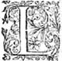
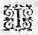
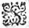
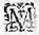
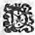
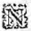
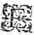
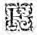

Éd.
Éd. de 1619, 397 recto

en accourcir la longueur. Et cela fut cause que l'on n'eut pas plustost commencé de marcher, que Philis attaqua le berger, luy disant : - Et bien, Silvandre, Que te semble-t'il du jugement de Diane ? où est l'outrecuidance qui te persuadoit de pouvoir obtenir quelque advantage par dessus moy ? - Bergere, respondit froidement Silvandre, je n'ay jamais esperé d'en tant avoir que nostre maistresse m'en a donné, mais aussi je soustiendray bien qu'il n'y eut jamais un jugement prononcé avec plus d'équité, ny avec une plus meure consideration, que celuy duquel vous parlez. - Et quoy, bergerbergere , adjousta Philis en sousriant, vous croyez que Diane vous ayt advantagéait avantagé
par dessus moy ? - Et qui en peut doubterdouter , respondit Silvandre, il faudroit bien avoir peu de jugement, pour n'entendre pas son jugement. - Quant à moy, reprit la bergere, je ne l'entends pas seulement, mais aussi je l'admire, car j'entends fort bien que j'ay obtenu par luy la victoire de la gageureη
que nous avions faite et j'admire qu'il n'y eut jamais jugement comme celuy-cy, puis qu'il contente les deux parties,
ayant tousjours ouy dire, qu'en tous les "
autres, l'une se plaint et l'appelle injuste. - En cecy comme "
en toute autre
chose, respondit Silvandre, jese "
monstre le bel esprit de Diane : - Et toutefois, dit Philis, c'est moy qui suis declaree la plus aymable, et c'est à moy à qui le siege de Diane a esté donné, comme à celle qui le merite le mieux :plus et pour faire entendre que c'est à moy à qui Silvandre doit rendre les mesmes devoirs, et les mesmes honneurs que nostre maistresse avoit auparavant receu de nous. - O bergere s'écria
Silvandre, que ce mystere est profond, et qu'il vous faut encore estudierη long temps pour le sçavoir entendre ! Et si *nostre belle maistresse s'l'on nous establissoit encores un juge pour declarer l'intention *qu'elle a euede nostre belle maistresse , je vous monstrerois bien-tost que tout ce que vous venez de dire, est plus à mon advantageavantage qu'au vostre : Et s'il luy plaist de nous ouyr elle à ceste heure mesme, vous verrez que c'est à moy à la remercier de la victoire qu'equitablement elle m'a adjugee. - Silvandre, dit alors Diane, il n'est pas raisonnable que l'autheur mesme s'esplique, et puis il me semble d'avoir parlé si clairement que quoy que j'y peusse adjousterpuisse ajouster n'y serviroit de rien : Mais je vous supplieray bien, puis que vous n'avez plus de gageureη contre Philis, et que je ne dois plus estre vostre juge, ny vostre maistresse, que vous vous souveniez que je m'appelle Diane. Et ces dernieres paroles furent proferees avec un visage si serieux, que Silvandre cogneut bien qu'elle le vouloit ainsi, et toutefoistoutesfois feignant de le prendre d'autre façon, il respondit, - Je sçay bien que vous estes cette belle Diane, que Philis et moy avons servie quelque temps, mais je sçay bien aussi que vous m'avez autrefois permis de vous tenir pour ma maistresse, et me pensez vous estre de l'humeur de Hylas ? pardonnez-moy s'il vous plaist, je hay trop l'inconstance et cette humeur volage pour changer de cette sorte, permettez-moy que je vous sois celuy que j'ay commencé de vous estre, et vueillez estre celle que vous m'avez esté. Hylas qui ne hayssoit pointη Silvandre, luy semblant l'un des plus accomplis bergers de toute la contree, encoreencores qu'incessamment
ils eussent disputé
dispute
ensemble :
- Il me semble, belle Diane, dit-il, que plusieurs raisons vous obligent à trouver bon ce que ce bergerSilvandre vous propose, et ausquelles vous ne pouvez contrevenir, sans offencer vostre beau jugement. Que si pour vous relever de cette peine, vous voulez que ce soit moy qui declare quelle est vostre intention, en ce que vous avez ordonné sur le differentdifferend , j'auray bien-tost condamné Silvandre. - Je vois bien, Hylas, respondit Diane en sousriant, que vous seriez aussi bon juge pour eux, que vous estes bon conseiller pour moy. - Non, non, interrompit Philis, je ne veux point de juge suspect, Silvandre auroit raison de tenir Hylas pour tel, mais s'il plaist au sage Adamas il en ordonnera. Adamas alors prenant la parole,η
- Il n'est pas raisonnable, dit-il, que quelqu'un juge par dessus Diane, mais ne laissez d'alleguer ce que vous pensez estre à vostre advantageavantage , et nous sommes tous icy pour luy en dire nostre advis : Alors Philis, - Est-il possible, dit-elle, Silvandre, que tu sois tellement preoccupé de l'Amour de toy-mesme, que tu ne voyes point une chose si claire que celle que tu me debats, m'asseurant qu'il n'y a icy personne qui ne juge bien que tu n'as point de raison, ou bien si seulement ce que tu en faisfaits n'est que pour monstrer la subtilité de ton esprit ? Se pouvoit-il parler plus clairement que Diane ? Je declare, a-t'elle dit, que Philis est plus aymable que Silvandre, et pour esclaircir encores mieux son jugement, elle adjousteajoute l'honneur de me mettre en son siege, pour te faire entendre qu'il y a autant de difference de toy à moy, qu'il y en a de toy
à Diane, et que pour ce regard, tu ne
me dois porter le mesme respect et le mesme honneur : Et pouvoit-elle faire d'avantage pour monstrer ma victoire, ny la declarer avec des paroles plus expresses ? au contraire, si elle a dit que tu te sçavois faire aymer, c'a esté pour faire entendre que tu es plus plein d'artifice que je ne suis pas, et en cela je l'advouëavoüe, mais c'est d'autant qu'une chose qui est aymable de soy-mesme, n'a point de besoinbesoing d'artifice pour se faire aymer : Que si elle
t'a fait present d'un chapeau de fleurs, et
" siqu' elle m'a ordonné de rendre le mien
" à celuy qui l'avoit donné, n'a-t'elle pas voulu faire voir
" que les choses qui sont aymables en toy, ne sont que des fleurs qui naissent et meurent en un jour ? Et parced'autant qu'elle juge en moy les merites estre plus solides et durables, elle ne veut pas me laisser cette marque des choses si tost perissables, et afin que tu le cognoisses encore mieux, *ne voulant qu'il y ayeParce qu'elle ne veut pas qu'il y ait quelque chose qui demeure sans recompense : Considere, Silvandre, quelle est celle qu'elle t'a donnee, et quelle est celle que j'ay euë pour le service que nous luy avons rendu. A toy elle a ordonné que tu luy baiseras la main, qui est une gratification que l'on faictfait aux esclaves et à ceux que nous estimons peu : Mais à moy elle cedacede
sa place, pour monstrer qu'elle ne peut rien faire davantaged'avantage , cestecette naturelle opinion estant nee en chacun que nul ne juge personne valoir plus que luy mesme ne vaut, elle a voulu faire voir que toutefois elle me cede,
puis qu'elle me quitte la place qu'elle avoit, ou bien pour te faire cognoistre qu'elle juge que tu me dois cedeceder
autant qu'à elle qui souloit estre au lieu où elle m'a esleveeeslevé . Or vante-toy maintenant, Silvandre, de l'advantageavantage que tu pretends avoir receu en ce jugement, garde bien le souvenir de la grande victoire que tu as obtenuë aujourd'huy, et va au temple de la bonne Deesse marquer le clouη
que l'on y a mis cestecette annee, afin qu'à l'adveniravenir tu sçachessçache en quel temps tu as esté victorieux.
A ce mot, Philis se teut et lors que Silvandre voulut respondre, Hylas le devança en disant. - Si c'est à moy à dire mon advis, dit-il,
je declare que Philis a gaigné. - Vous donnez vostre jugement, dictdit
Adamas en sousriant, avec un peu trop de precipitation, car vous condamnez un homme sans l'avoir ouy, Silvandre n'a point parlé encores : - Il est vray, respondit Hylas, mais il ne faut pas s'arrester à si peu de chose, car je sçay bien qu'il ne peut rien respondre qui vaille. Chacun se mit à rire des discours de Hylas, et lors que chacun se fut teu, Silvandre reprit froidement la parole de cette sorte :
du Berger Silvandre, sur le jugement
de Diane.

sur un rocher, où une Aigle luy devore continuellement le foye. Ne courray-je point cette mesme fortune, si declarant les intentions de cette belle Diane, je luy
desrobedérobe le secretη
qu'elle a voulu reserver à elle, puis que je n'estime pas ce larcin moindre que celuy de Promethee, ny faitfaict contre une moindre divinité ? Mais aussi ne seray-je point complice à celuy de Philis, qui se veut injustement attribuer ce qui ne luy est point deu, et à mon desadvantagedesavantage , et contre l'equité, et le bon jugement de cette belle Diane ? Veritablement si je delaisse cette juste cause, la pouvant soustenir avec de si claires raisons, je crains d'estre grandement coulpable. Que ferons-nous donc, ô Silvandre ! pour sans encourir la peine faire ce que nous devons ? Recourons à cette belle Diane mesme, et avec des supplications demandons-luy en don ce que nous pourrions bien luy déroberdesrober . Il est impossible que les prieres, qui sont fillesη
de Tautates, ne soient exaucees par celle qui a tant de perfections, que nous la pouvons estimer divine, s'il y a quelque chose de tel parmy les mortels.
C'est donc à vous, ô ma belle et divine Maistresse, à qui j'adresse ces prieres, afin qu'il me soit permis en declarant la verité de ma victoire, de monstrer l'équité de vostre jugement, protestant qu'en cettecet action j'ay plus d'esgard à ce qui vous touche, qu'à ce qui est de moy. Car que me peut importer que Philis se prevalle de l'advantageavantage que j'ay par dessus elle, puis que cela ne me rend moins homme de bien, ny moins vostre serviteur que je suis ? mais si par les subtilitez de Philis on venoit à croire qu'un jugement si peu
juste eust esté donné par vous contre toute sorte de raison ; ce seroit blesser l'honneur de vostre bel esprit, qui ne s'est jamais trompé en une chose si claire et si recogneuë de chacun. Et avec l'asseurance que vostre silence me donne que vous le trouvez bon, je respondray à Philis de cette sorte.
Est-il possible, bergere, que vous vueillez estre deux fois vaincuë, et que par force vous me vueillez par deux jugements rendre vostre superieur ? Il semble que vous avez voulu appellerappeller de
Diane devant un autre Throsne, et si nostre grand Druyde
ne vous en eust empesché, je ne sçay si cét ouvrageη
n'eust point esté commis contre elle : mais il ne faut pas trouver estrange, que celle qui n'a jamais sceuη
aymer n'en sçache entendre les secrets et les ordonnances. Et toutefoistoutesfois afin que ny vous ny ceux qui vous escoutent ne demeuriez plus long temps en cette erreur : oyez bergere, et avoüez la verité que je vous vay declarer briefvement.
Le Grand Dieu qui est par-dessus tous les Cieux, et qui d'un seul regard voit non seulement tout ce que le Soleil descouvre, mais de plus tout ce qui est de plus caché dans les entrailles de la terre, et dans les profonds abismesabysmes des eaux, a voulu donner ce privilege à l'homme, qu'il n'y a que luy seul qui puisse cognoistre ses pensees, s'il ne luy plaist de les descouvrir : Mais pour l'advantageravantager encores plus, il ne luy a pas seulement donné la vertu de les cacher à toute sorte de personnes, mais de les pouvoir participer à tous ceux qu'il veut : Et afin qu'il le facefasse plus intelligiblement,
il luy a laissé deux moyens qui se declarent l'un l'autre, qui sont la Parole et les Actions : deux choses dont chacune separément peut fort bien descouvrir
la pensee
*
l'intention : mais qui pour esclaircir encore mieux nos intentions
*
pensees, se rendent plus intelligibles l'une par l'autre : Et c'est pourquoy lors que nos actions sont douteuses, nous y adjoustons la parole pour les resoudre, et quand nos paroles sont obscures, nous les esclaircissons par les actions : et le Grand Tautates l'a voulu ordonner de cette sorte, afin que ces ames trompeuses et qui prennent plaisir à decevoir tous ceux qui les approchent, n'eussent point d'excuse, lors que lesleurs
deceptions sont descouvertes, sur l'impuissance de ne s'estre pas sceu mieux faire entendre.
Or cette sage et tres-juste Diane, voulant nous faire sçavoir ce qu'elle jugeoit de notre different, afin de ne nous laisser aucune doute
sur ce sujetsuject , a voulu user des deux moyens qui luy sont donnez pour nous faire entendre son opinion. Elle a donc en premier lieu parlé fort clairement, et puis à sesces paroles elle a adjousté les actions qui pouvoient les esclaircir entierement : Et toutefois puis que la feinte ignorance de Philis me contraint de recourre aux raisons, pour ne laisser personne en doute de la verité, je diray,
Que pour recognoistre cette verité, il la faut prendre en sa source, et qu'à cette occasion pour sçavoir qui par le jugement de Diane a eu la victoire, il est necessaire de considerer quel a esté le commencement du different qui a donné naissance à nostre gageureη
. La Nymphe
Leonide en
a bien rapporté fidellementfidelement la verité, lors qu'elle a dit que les trois Lunes estans escoulees, Diane devoit juger qui de Philis et de moy se sçavoit mieux faire aymer : car toute nostre gageureη
fut fondee sur la reproche que Philis me faisoit, que l'occasion pourquoy je n'entreprenois de servir pas une de nos bergeres, c'estoit pour recognoistre le defaut que j'avois des choses qui peuvent faire aymer : Et sur ce que je soustenois que ce n'estoit que faute de volonté, je fus condamné, et elle aussi à servir trois Lunes entieres cette belle Diane,
et qu'apres elle jugeroit qui de nous deux se sçauroitsçavoitmieux faire aymeraimer . Cecy estant bien entendu, je croy qu'il n'y a personne qui incontinent ne voye que par les paroles de cette belle Diane, j'ay obtenu ce que je pretendois, puis qu'elle a prononcé ces mesmes mots : nous disons et declarons, que Silvandre se sçait mieux faire aymer que Philis. Qu'est-ce que j'ay plus
à demander, ayant receu ce jugement si clair et en paroles qui ne pouvoient estre plus intelligibles ? Et toutefoistoutesfois à ces parollesparoles elle a voulu adjouster les actions, telles que personne ne les peut considerer, sans incontinent avouër ma victoire. Elle faitfaict deux choses : L'une
elle me met la couronne sur la teste : et l'autre m'ordonne de baiser sa belle main : toutes deux des faveurs si grandes, que je ne sçay s'il y en a qui les peussent surpasser. Car, Philis, à qui donne t'on la couronne sinon à celuy qui a vaincu ? Et à qui les belles permettent-elles de leur baiser la main, sinon à ceux qu'elles ayment, ou qu'elles jugent dignes d'estre aimés ?aymez Je ne sçay, bergere, où vous allez chercher cette
coustume que vous dites, que l'on permet ces baisers à ceux que l'on estime peu : car si vous faitesfaictes ces faveurs à ceux que vous mesestimez, quelles seront celles que vous ferez à ceux que vous penserez meriter quelque chose ? Croyez moy, mon ennemie, qu'à ce prix il n'y a personne qui ne fust bien aise d'estre mespriséméprisé de ma belle Maistresse, et s'il luy plaist de continuer, je proteste que je veux bien vivre et mourir dans ce mépris. Et quant à ce que vous dites, que nostre Juge a voulu monstrer en me donnant ce chapeauchappeaude fleurs, que les choses aymables qui peuvent estre en moy ne sont que des fleurs qui naissent et meurent en un jour : considerez ce qu'elle y a adjoustéajousté , prevoyant bien que peut-estre on pourroit penser ce que vous dites : Nous ordonnons, dit-elle, que Silvandre reprendra son chapeauchappeau de fleurs, de mes mains, et le portera tousjours à l'avenir, en le renouvellant lors qu'il flestrira, afin que cette marque luy en demeure eternelle parmy les bergers. Vous semblsemble -t'il bergere, qu'elle m'ordonne
cestecette couronne afin qu'elle flestrisse dans un jour, puis qu'elle veut que je la porte pour memoire eternelle ? Mais en cecy vous estes excusable, car c'est l'un de ces mysteres que vous n'entendez point en l'Amour, et lequel je vous veux
expliquer, afin que vous sçachiez pourquoy nostre juste Juge vous a ordonné de rendre ce chapeauchappeau de fleurs à qui
le vous a donné, et à moy de le porter tousjours.
Amour, que nos sages Druydes estiment estre le Grand Tautates, et que ceux qui enseignent dans les Escolesη
des Escholles de
Massiliens, disent
estre le premier des Dieux qui sortit hors du Cahos, apres avoir osté la confusion et le desordre de cette inutile et lourde masse, et separé les choses mortelles des immortelles, voulut esclairer dessus toutes, et en les esclairant leur donner la vie et la perfection. Et parce que l'homme n'a jamais esté creé que pour cognoistre, aymer et servir ce Grand Tautates, et que nous ne pouvons rien comprendre, qui auparavant ne soit representé à nostre ame par des especes corporelles, avec lesquelles nous nous formons les ideesη des choses que nous entendons : Il voulut nous mettre devant les yeux un corps si parfaictparfait , qu'il peutpeust en quelque sorte nous representer ce qu'il vouloit que nous recognussions de luy, afin que le cognoissant nous vinssions à l'aymer, et en l'aymant à le servir. Et d'autantdautant qu'il n'y a rien de si beau, ny de si pur que ce Grand Tautates, il choisit donc dans le sein de la matiere, celle qu'il jugea la plus pure et la plus parfaicte, et puis l'embellit de toutes les beautez, et l'accomplit de toutes les perfections dont un corps peut estre capable, et le nomma Soleilη . Ce Soleil incontinent se fit voir d'un costé à l'autre du Ciel, donna vie et mouvement à tout ce qui estoit sur la terre, et fit des effectseffets tant admirables, que plusieurs estans abusez de luy recognoistre tant de perfections, l'ont creu estre ce grand Dieu, duquel il n'estoit toutefois qu'une bien imparfaite ressemblance, et l'ont adoré comme s'il eust esté celuy qu'il representoit. Doncques, Philis, si vous voulez cognoistre en quelque sorte quel est ce grand Tautates Amour, il faut que vous l'apreniezappreniez
par les choses que vous voyez en ce soleil, et qui tombent sous vos sens, et quand vous voyez que le soleil donne vie à tout ce qui est en l'univers, vous devez dire en vous mesme que l'Amour donne vie à toutes les ames, quand il esclaire non seulement au ciel, mais par toute la terre, que l'amour est aussi la lumiere qui donne la veuë de l'entendement à tous les esprits, car il n'y a celuy qui soit si aveugle à qui il n'ouvre les yeux et qu'il ne rende clair-voyant. Quand le soleil se cachant nous laisse en tenebres, que c'est ainsi que l'Amour se retirant d'un esprit qu'il a autrefois esclairé, le laisse obscur et sans lumiere, ny entendement. Et lors que vous considerez que le soleil fait et change les saisonsη , qu'Amour aussi fait le Printemps, en faisant produire enà nos esprits les fleurs des esperances : l'Esté, en nous en donnant les fruicts : l'Automne, en nous en laissant jouyrjouïr : et l'Hyver, en nous donnant l'entendement de les sçavoir longuement conserver. Je serois trop long, si je voulois apporter icy par le menu, tous les rapports qu'Amour et le Soleil ont ensemble : Il suffira donc, bergere, que reprenant ce que j'ay desja dit, vous entendiez que ces fleurs que vous mesestimez si fort, et qui sont, à ce que vous dites, aussi tost flestriesflestriez que produites, ce sont les esperances qu'Amour nous donne en son Printemps. Et si cela est, que direz vous que signifie ce chapeauchappeaude fleurs, pris de la main de Diane à ses pieds où je l'avois posé, pour le mettre sur ma teste, sinon que l'esperanceη que je m'estimois n'estre pas digne d'avoir, elle veut que je la prenne de ses propres mains ? ô Amour, quelle
plus grande faveur pourrois-je recevoir de ma belle maistresse ? O Philis, que ces fleurs me sont cheres et agreables, et mesme considerant la suittesuite de cette faveur : Voila donc ces belles fleurs, qui sont le Printemps de mes esperances, et pensez vous que l'Esté n'ait pas suivy incontinent aprez ?apres Et ne voila pas le baiser de cette belle main qui me donne les fruicts de cette esperance ? Mais n'ay-je pas l'Automne et l'Hyver par ce beau soleil de mon ame ? Sans doute Philis, ma belle maistresse n'y a rien oublié, quand elle a ordonné que pour marque eternelle, je portasse cette belle couronne parmy les bergers, voila la jouïssance de l'Automne, et que j'en renouvellasse continuellement les fleurs, et voila les moyens de pouvoir conserver longuement le bon-heur que j'ay receu. Mesprisez à cette heure mon ennemie, ces fleurs, et ce baiser que l'on donne dites vous à des personnes si mesprisables, et considerez si vous ostant ces fleurs, et les vous
faisant rendre au sage Adamas, qui est le souverain juge de ces contrees, et qui par ce moyen peut estre appellé la Justice mesme, elle n'a pas voulu monstrer que vous ne deviez rien esperer, et que si vous aviez conçeu sans raison quelque esperance, il estoit bien raisonnable que vous en fussiez dépoüillee devant la mesme justice, comme luy faisant une amende honorable en la presence de toute cette venerablehonorable
compagnie.
Il ne reste donc rien maintenant à dire, sinon que je vous declare pourquoy ma belle Maistresse a dit que Philis estoit plus aymable que
" Silvandre, et quelle raison l'a esmeüe à vous mettre
" dans son propre siege ? Et pour l'entendre
" plus aisément, il faut que vous sçachiez,
" bergere, que tout ce qui est bon, est aimableaymable
" mais il n'est pas aymé pour cela, parcepar ce que le bon, s'il n'est recogneu, est comme le tresorη
caché,
qui ne se peut faire estimer que quand quelqu'un en a la cognoissance. Et Dieu mesme, qui est le Bon de tous les Bons, ne seroit pas aymé s'il ne se faisoit cognoistre. Lors que Diane declare que vous estes aymable, elle le dit avec raison, parce que tout ce qu'ilqui
est bon est aymable, et sans doute les vertus et les perfections qui sont en vous sont bonnes ; car ressemblant à ma belle maistresse, en ce que la nature vous a faite fille, il n'y a point de doute qu'en cette qualité vous ne soyez aymable, et beaucoup plus que Silvandre : mais d'autantdautant qu'il vous deffaut les autres choses à vous faireaymeraimer , et lesquelles nostre juste juge àa
recognuësrecogneuës en moy : Elle a declaré que je me sçay mieux faire aymer : Et cela, bergere, si vous l'entendez bien, est tres-juste, et nullement à vostre
" desavantage, car il faut considerer
" le personnageη que nous faisons tous trois.
Diane est celle qui reçoit nos services et nos passions, et vous et moy la servons et la recherchons, le propre de l'homme, c'est de servir, de rechercher, et d'adorer une belle maistresse. Je faisfaits donc envers Diane ce que je dois faire comme homme, et ma maistresse en recevant mes services et mes vœux, elle fait ce qu'elle doit faire comme fille, mais vous en recherchant d'Amour ma maistresse, vous faites le contraire de ce que
vous devez faire, et par ainsi vous ne devez pas trouver estrange, si encore que vous soyez plus aymable, Silvandre toutefois se sçait mieux faire aymer que vous, puis qu'il faitfaict ce pourquoy il est nay, et vous tout le contraire, puis que les filles ne doivent pas rechercher, mais estre recherchees : Et pour vous monstrer que nostre juste juge l'a ainsi entendu, considerez que vous ostant du lieu où vous estiez, elle vous a mis en sa place pour vous monstrer que vous ne deviez pas faire le personnage de celuy qui recherche, mais le sien, qui estoit celuy d'estre aymee et servie. Avoüez donc maintenant, Philis, que j'ay gagné la gageureη
que nous avions faitefaicte , et je confesseray que vous estes plus aymable que moy, et tous deux ensemble disons, qu'il n'y eut jamais un plus sage, ny plus juste juge, ny une plus belle maistresse que cette Diane, à qui nostre gageureη
m'a donné, et de qui les perfections m'ont entierement acquis, et me retiendront eternellement.
Ainsi finit Silvandre, laissant chacun tres-satisfait et de ses raisons et de sa modestie. Philis mesme fut contrainte d'advoüer ce qu'il avoit dit, et cela fut cause que Diane voyant qu'il n'estoit point necessaire de faire un second jugement, n'en dit rien d'avantage. Un seul
Hylas tenant Stelle sous les bras, s'alloit moquant de tout ce qu'ils avoient dit : et voyant que chacun s'estoit teu : - Et bien, Silvandre, luy dit-il, qu'est-ce que tu veux que nous apprenions de ton long et fascheux discours ? Silvandre luy respondit
froidement, - Toute cette troupe cognoistra que ce jugement que Diane aà donné avec de si bonnes et de si justes considerations, a souffert la mesme injure par l'explication que Philis luy donnoit, que reçoivent la pluspart des Oraclesη , par ceux qui le plus souvent les tournent au gré de leurs desirs, et de leurs passions. Et toy et Stelle vous apprendrez, que depuis que le soleil nous àa esté donné pour nous representer ce qui est de l'Amour, tout ainsi qu'il n'y a qu'un soleil, aussi ne devons nous avoir qu'un Amour. - Et toy berger, dit Hylas incontinent, tu te souviendras qu'il n'y a pas long temps que tu és en vie, puis que tu dis que c'est Amour qui la donne à toutes les ames, car n'ayant rien aiméaymé que cette bergere, et n'ayant que trois ou quatreη Lunes que tu as commencé, ou ce que tu nous contes est faux, ou tù ne vivois pas il y a fort peu de temps : mais si cela est, enseigne nous je te supplie, Silvandre, comment tu faisois, estant mort à conduire tes troupeaux, à aller à la chasse, à parler, à chanter, à courre, et à luiterluitter, car je serois bien aise d'apprendre cela de toy, afinà fin que j'en puissepusse faire de mesme quand je seray mort, parce que j'en ay veu d'autres que l'on met au feu, et d'autres que l'on enterre, et ceux-là me faisoient peur quand je les voyois : mais toy, j'avouë que tu estois le plus gentil mort qui fut jamais, et que si je pensois estant mort, faire comme tu faisois avant que tu fusses amoureux, je ne me soucierois pas tant de mourir que j'ay faitfaict jusques icy. Silvandre alors en sousriant, - Il faut par force, ditdict -il, rire des discours de Hylas, mais encore faut-il leur respondre :
Il est vray qu'Amour est la vie de nostre ame, si l'on l'entend comme il se doit, mais pour cela il faut que tu sçaches, Hylas, que nous considerons deuxη sortes de vie en l'ame. L'une, celle qu'elle vit avec le corps, et l'autre avec elle mesme. La premiere anime le corps, le faitfaict marcher, parler, manger, et luy faitfaict faire toutes ces actions lesquelles tu as recogneuës en moy, avant que j'eusse eu le bon-heur d'aymer Diane, et l'autre donne la vie à l'ame, et faitfaict que veritablement elle vit en elle mesme, car elle luy esclaire l'entendement, luy forme ses imaginations, et attire et occupe toutes ses volontez : Or la premiere sorte de vie est commune à l'homme avec tous les animaux, car tous en vivant produisent les mesmes actions, mais l'autre le relevant par dessus tout ce qui a corps, luy donne une autre espece de vie, qui est commune avec sesces pures pensees desquelles nous avons parlé. Et maintenant tu vois Hylas, que si j'ay dit qu'Amour donne la vie aux ames, je n'ay pas pour cela dit que le corps fust mort, et qui est cette mort de laquelle tu veux parler, car j'eusse dit des choses impossibles : Impossibles, d'autant que nul ne peut mourir qui auparavant n'a vescu, mais celuy qui n'a jamais aymé, par cette raison n'auroit jamais vescu ; Ne me demande donc plus comment j'ay faitfaict estant mort, à parler, à chanter, à courre, et à luiter :luitter car toutes ces actions dependent d'une vie de laquelle Amour ne daigneroit se mesler. - Et quoy, respondit Hylas, vostre Amour, à ce que je vous oy dire, ne se mesle que des choses de la pensee et de l'imagination ? - Il n'y a point de doute,
repliqua Silvandre, que les autres il les laisse à l'instinct que la nature donne à chacun, - Or Silvandre, reprit Hylas, c'est dommage que nous n'aymonsaymions tous deux une mesme bergere, car nous nous accorderions fort bien, toy avec les faveurs qu'elle te pourroit donner, des pensees et des imaginations : et moy avec celles que ton Amour remet à cét instinct de la nature. Alcidon et la pluspart des bergers se mirent à rire de la plaisante humeur d'Hylas, et Silvandre mesme, qui enfinen fin luy respondit : - O Hylas ! si tu sçavoisη aymer, tu ne parlerois de cette sorte : ny ne confondrois pas toutes choses comme tu fais. Quand mon ame vit en sa pensee et en ses contemplations, laisse-t'elle pour cela de donner la vie à ce corps qu'elle anime ? nullement. Le Soleilη qui est, comme nous avons ditη , le vray symbole de l'Amour, esclairant les choses celestes, laissentlaisse-t' -il de jetter ses rayons sur les corps qui sont ça bas ? Et pourquoy veux tu que l'Amour esclairant nostre entendement, et formant les pensees de nostre ame, ne donne pour cela les desirs aux corps qui luy sont naturels ? Non, non, Hylas, il n'y a que cette difference, ceux qui ayment comme je fais, ils n'ont les desirs desquels tu parles, que par ce qu'ils ayment : mais ceux qui ayment comme toy, ils n'ayment que parcepar ce qu'ils ont ces desirs. - Mais Silvandre, adjousta Stelle qui estoit un peu piquee, ne m'avouërez-vous pas que puis que vous avez comme que ce soit ces desirs, vous estes grandement outrecuidé, quand vous regardez qui vous estes, et qui est Diane ? - Je confesse, dit froidement
Silvandre, que me considerant avec les yeux de l'égalité, vous avez raison, mais que je n'ay pas tort aussi, quand j'adjouste de mon costé mon extreme amour, et l'esperance qu'il luy plaist de m'en donner. - Vostre extreme amour, dit-elle, est aussi invisible que cette esperance : - Mes actions, dit Silvandre, et celles de cette belle maistresse la peuvent rendre visible : et si les miennes jusques icy ne l'ont peupû faire, j'espere de luy rendre tant de service qu'encore que je ne puisse pas la monstrer entierement, toutefoistoutesfois elle en verra assez pour la juger la plus grande qui fut jamais : mais qu'elle ne m'ait point donné de cognoissance de cette esperance que vous me reprochez, si vous aviez aussi bien remarqué que moy ses actions, vous ne le diriez pas : car les fleurs sont-ce pas des esperances, et pourquoy m'auroit-elle ordonné de les porter sur la teste ? - Il est vray, repliqua Stelle, mais ces esperances, comme vous avez receu les fleurs du sage Adamas, vous les devez aussi avoir des choses qui dependentη de ce grand Druyde, et non pas de Diane. - O Stelle, adjousta Silvandre, je voy bien que vous n'avez l'œil qu'à remarquer les actions d'Hylas, car si vous eussiez veu ce que j'ay faict, vous ne diriez pas que je tiens ces fleurs du grand Druyde : Il est bien vray que je les ay euës de luy, mais ne les ay-je pas laissees, et posees aux pieds de Diane, pour monstrer que j'y remets toutes cesmes esperances ? et si maintenant vous me les voyez sur la teste, de laquellequelle autre main les ay-je que de celle de qui toutes mes esperances veulent dependre ?despendre L'ordonnance de Diane ne porte-t'elle pas, que je reprendray
ce chapeau de fleurs de ses mains ? Et cela qu'est-ce à dire sinon espere ? - Mais toutefois, reprit Stelle, vous les avez euës ces fleurs et ces esperances du sage Adamas. - Ny cela aussi, respondit le berger, n'a pas esté sans un grand mystere, car peut-estre Tautates veut que je scache que le commencement de toutes mes esperances doit prendre origineη
du sage Adamas.
Les disputes de ces bergers et bergeres eussent continué d'avantage, n'eust esté qu'en mesme temps ils arriverent dans le grand Pré, où les jeux, et les exercices de ces jeunes bergers avoient accoustumé de se faire : Et desja ils s'y estoient assemblez de toutes parts, et avoient preparé toutes les choses necessaires, lors que voyant de loing le grand Druyde et toute la troupe, ils s'en vindrent à sa rencontre, la teste parée de fleurs, et chantanschantant , et sautanssautant pour monstrer le contentement qu'ils avoient de le voir parmy eux. Les premieres salutations faictes, l'on proposa les prixη
pour la course, pour la lutteluitte, pour le salutsault et pour jetter la Barre. De la premiere Silvandre emporta le prix, de la luiteluitte
Licidas, du sauter
Hylas, de la barre
Hermante, qui estoit ce berger de Camargues venu avec Alcidon et Daphnide. QuantQuand à Silvandre, chacun sans difficulté luy donnoit la victoire de bon cœur, et à Licidas aussi : mais pour Hylas et Hermante, les autres bergers de Forest en estoient bien faschez ; Et Hylas s'approchant de Stelle, parcepar ce que le prix qu'il avoit gaigné estoit une couronne faicte de plumeplumes
η
fort artificiellement, il la supplia de
la luy vouloir mettre sur la teste : Silvandre en se mocquantmoquant luy dit, - C'est un digne loyer de tes fidellesfideles peines. - Qu'est-ce que tu veux dire ? respondit Hylas apresη
que Stelle luy eut faict la faveur de la luy mettre sur la teste. - Je veux dire, reprit Silvandre, que ceux qui ont osé sauter contre toy, s'ils te cognoissoient, sont bien outrecuidez, parce qu'ayant la teste si legere que tu as, ils ne devoient pas juger que le reste du corps fust plus pesant, ny esperer moins que d'estre vaincus, mais ceux qui t'ont donné cette couronne, ont bien mieux faictfait paroistre leur jugement : car à un esprit si leger que le tien, que sçauroit-on donner qui luy fust mieux deu qu'un chappeau de plume ? - Je ne rougiray jamais, dit froidement Hylas, que l'on me donne les marques que je porte, car à toy qui es lourd et grossier, l'on faitfaict bien de donner les choses qui sont produitesproduictes de la terre, comme ces fleurs qui sont en cette Guirlande que tu as en la main : mais à moy comme celuy qui a quelque chose de plus noble, qu'est-ce que l'on ose presenter que des plumes, pour monstrer que je me releve dans l'element de l'air, comme meprisant celuy de la terre aussi grossier que tu es ? Toy dis-je qui ne laisses d'envier ce que tu reproches en moy, puis que tu as bien voulu courre contre les autres bergers pour avoir la gloire d'estre plus leger qu'ils ne sont. - Tu te trompes, respondit Silvandre, je n'ay pas couru pour faire paroistre d'estreη plus leger, mais ouy bien plus desireux de m'approcher le premier de ma belle Maistresse, qui estoit assise aupres des termes où nous adressions nostre course, de sorte que tu es bien deceu, si tu penses que j'aye couru pour avoir la gloire
de courre le mieux, mais seulement pour faire voir qu'il n'y a rien qui me puisse devancer quand il faut que j'aille vers elle. De fortune Diane estoit aupres de cette troupe, et ouyrouyt leurs discours, qui fut cause que s'addressantadressant à Silvandre : - Berger, luy dit-elle ces noms de Maistresse et de belle que vous me donnez, et ces paroles qui tesmoignent une affection particuliere, ont esté de saison, lors qu'a duré la gageureη que vous aviez faite : mais maintenant je vous supplie de n'en plus user, si vous ne me voulez desobliger et vous ressouvenir quand vous voudrez me nommer, que comme je vous ay desja dit je m'appelle Diane. Silvandre luy respondit. - Celuy qui n'est au monde que pour vous faire service, aymeroit mieux la mort, que de vous desplaire : mais avant que de me faire ce commandement, permettez que j'aye tout le reste du jourη pour me desaccoustumer de ces paroles qui vous sont tant ennuyeuses, et cependant ayez agreableaggreable cette couronne que j'ay gagnee par la faveur que vous m'avez faicte, afin que je puisse marquer ce jour pour le plus heureux de tous ceux que j'ay passez jusques icy. La bergere qui aymoit ce berger, et qui commençoit de luy donner la place en son cœur qu'y souloit avoir Philandre, luy eust aiséement accordé sa requeste : mais craignant que cette bonne volonté ne fust recogneue de ceux qui les escoutoient, la refusa assez rudement et en effect s'en fust allee sans Astree et Alexis qui l'arresterent, et luy dirent que la demande de Silvandre estoit si raisonnable, qu'elle s'efforceroitoffenceroit η et sa naturelle courtoisie si elle la refusoit : et presque par
force, pour le moins en apparenceη
, elles la luy firent accorder. - Je le veux bien, dit la NympheNimphe
Leonide, pourveu que ce chapeauchappeau de fleurs que Diane a desja sur sa teste soit donné à Paris, autrement il auroit trop d'occasion de se douloir de voir la Guirlande de Silvandre sur la teste de sa maistresse. - Ce tiltre, dit Diane, ne m'est pas deu : et toutefoistoutesfois puis que cette belle Druyde et cette discrettediscrete bergere me condamnent à ce que vous avez ouy, je consens à ce qu'une si grande
NympheNimphe que Leonide m'a ordonné. Et à ce mot, s'ostant le chappeauchapeau de fleurs qu'elle portoit, elle receut celuy que Silvandre un genoüil en terre luy presentoit, et remit le sien sur la teste de Paris, qui depuis ne fut pas cause d'une petite disputeη
entre Paris et le berger, pour sçavoir qui avoit esté le plus favorisé : mais pour lors il n'en fut pas dit davantaged'avantage , par ce qu'avant que toutes ces choses fussent achevees, le Soleil avoit presque finy son cours, et s'en alloit cacher le jour dans la merη
,
cela fut cause qu'ils se mirent en chemin pour se retirer dans leurs hameaux.
Astree et Alexis marchoient ensemble, Adamas, Alcidon et Daphnide se tenoyenttenoient compagnie, Philis estoit aupres de Licidas, Paris entretenoit Leonide pour se resoudre sur les discours qu'ils avoient desja commencezη
en la maison d'Adamas, de sorte que Silvandre s'approchant de Diane avec une grande reverence : - Ma belle Maistresse, luy dit-il, me permettrez-vous de vous ayderaider à marcher jusques en vostre logis ? - Je reçois, luy respondit-elle, cetteceste
courtoisie, mais je voudrois bien que vous prissiez de
bonne heure la coustume de ne nommer par mon nom. - Croyez, luy respondit-il, belle bergere, que vous n'en avez point qui soit plus veritablement vostre nom, que celuy que je vous donne de ma maistresse : car je vous supplie de croire, que c'est une chose si vraye que je suis vostre serviteur, que toutes les choses plus certaines ne le sont point d'avantage. Diane qui ne desiroit pas d'esloigner Silvandre, et qui toutefoistoutesfois ne voyoit point de raison de l'aymer, estant incogneu et un pauvre estranger, demeuroit bien empeschee de ce qu'elle avoit à faire, et jugeant que pour lors elle ne pouvoit promptement prendre un meilleur conseil, que feindre de croire que c'estoit pour continuer le reste du jour, de la mesme facon qu'il l'en avoit suppliee, elle luy respondit, - Je trouve bon Silvandre, que vous acheviez le reste du jour comme vous l'avez commencé, puis qu'Alexis et Astree l'ont ainsi voulu. - Si je croyois, reprit-il incontinent, que ce jour estant finy il me falustfallust cesser de vous aymer, je jure le ciel qui me donne la vie, que j'aymerois mieux cesser de vivre : - Vous dis-je pas, repliqua Diane, qu'il vous est permis de continuer de cette sorte tant que le jour durera, mais prenez garde que le soleil se va coucher, et que le jour finit quand il se retire. - Le jourη , respondit Silvandre, dure tant que la clartéclairte demeure : - Je le vous avoüe, dit Diane, et c'est pourquoy une heure auou plus aprespres que le Soleil sera couché, il n'y aura plus de clairte, ny par consequent de jour pour continuer la feinte que vostre gageureη vous a permise. - Quand il vous plaira ma
belle maistresse ditdict
Silvandre, ce different sera jugé par ceux qui m'ont ordonné tout ce jour, mais cependant je ne laisseray de vous dire, qu'il n'y a point de temps qui puisse limiter le service que je vous dois, ny deffence qui ayt la force de me divertir de la veritable affection que je vous ay voüée. Et afinà fin que vous sortiez d'erreur, permettez moy, belle bergere, que je vous die avec les paroles de la mesme verité, que cette gageureη
a esté au commencement sans autre dessein que de vaincre Philis, et donner du passe-tempspassetemps à celles qui en avoient esté cause, mais depuis les perfections que j'ay rencontrees en vous, m'ont bien faict paroistre qu'il ne se faut jamais jouër
avec l'Amour,
et qu'il est impossible de demeurer
long-temps aupres d'un
grand feu sans s'y brusler. Diane l'ayant laissé "
quelque temps sans luy respondre,
en finη
"
luy parla froidement de cette sorte, et sans tourner
seulement la teste de son costé ; - Silvandre, si vous voulez que je croye ce que vous me dittesdites ainsi que sonnent vos paroles, je vous respondray que je suis tellement desobligee de vous, que je ne sçay si jamais j'oublieray cét outrage, que si en effect (et comme je croy que c'est vostre intention) ce n'est que pour clorre cette journee en passant vostre temps, comme elle a esté commencee suivant vostre gageureη
, je recevray tout ce que vous me venez de dire, comme j'ay fait jusques icy, depuis le commencement de vostre different avec Philis : voyez donc ce que vous avez à me respondre, afinà fin que je sçache ce que j'ay à faire, mais je vous prie, berger, pensez y bien. Silvandre qui cogneutcognut que Diane parloit
avec plus de resolution qu'il n'eust pensé, et cognoissancognoissant que s'il passoit plus outre, elle luy feroit quelque responsereponce qui l'esloigneroit à jamais d'elle, se resolut de ne rien rompre et de gaignergagner seulement le temps, jusques à ce que cesses longs services, et les asseurees cognoissances qu'il esperoit de luy donner de son affection, eussent peu faire quelque coup en son ame, jugeant que peut-estre elle mesme seroit bien ayse d'avoir la mesme occasion de recevoir ses services, et les asseurances de ses affections, avec la mesme couverture que jusques à ce coup elle les avoit receuësreceeuës , c'est pourquoy tournant les yeux sur son beau visage : - Ma belle maistresse, dit-il, le jourη que vous m'avez accordé n'est pas encores achevé, et lors qu'il le sera, je verray ce que j'auray à vous respondre : cependant vous me permettrez d'user du privilege que vous m'avez donné. - De cetteceste sorte, respondit la bergere, je reçois vos discours de bon cœur, mais si me semble-t'il que vous devriez commencer à parler comme vous souliez faire, puis que voila le Soleil qui ne peut tarder de se cacher. - Nous sommes bien loing de conte vous et moy, respondit le berger, puis que le jour que vous m'avez accordé, doit durer aussi long temps que ma vie. - Que vostre vie ? reprit incontinent Diane, je serois marrie qu'elle fust si courte, et je vous ay trop d'obligation, pour ne souhaitter une plus longue duree à vos jours : - Vous plaist-il ma belle maistresse, dit-il, que nous ayons quelqu'un qui nous reglereigle en cecy ? - Et qui voudriez vous choisir ? respondit Diane : - Qui vous voudrez, repliqua Silvandre,
pourveu qu'il ayme, ou que seulement il ait quelquefois aymé : - Voulez vous, dit Diane, que nous nous en remettions à Astree et à Philis ? - Je le veux bien, respondit Silvandre, encores que Philis me soit grandement ennemie. - Vous vous trompez, respondit Diane en sousriant, croyez qu'en effect vous n'avez pas une bergere qui tienne mieux vostre party, quelque mine qu'elle facefasse au contraire, mais je ne veux pas que nostre dispute soit en public, comme a esté celle de vous et de Philis, pour des considerations que vous pouvez bien penser, il faut que ce soit quand chacun se retirera, car nous allons souper en la maison d'Astree, où Phocion
traitte
Adamas, et Daphnide et nous toutes, nous leur en parlerons en particulier. Oη
que ces paroles donnerent une grande consolation à Silvandre, luy semblant que puis que Diane avoit le soing de cacher cette recherche, ses affaires n'estoient pas en mauvais termes, et il estoit tres certainη
que cette bergere s'estoit peu à peu engagee de bonne volonté envers Silvandre, de telle sorte que depuis quoy qu'elle sceust faire, il luy futfust impossible de s'en despestrerdépestrer jamais.
Cependant
Astree et Alexis s'alloient entretenansentretenant , et comme l'on passe d'un discours en un autre, ilsη
vindrent en fin sur le jugement de Diane : Et Alexis, continuant leur propos, - Belle bergere, luy dictdit -elle, vous puis-je parler librement ? - Comme à vous mesme, respondit Astree. - Que pensez-vous, dit Alexis, de l'Amour de Silvandre ? - Je croy, adjousta la bergere, que veritablement ce berger est grandement amoureux,
et que si Diane ne se conduit avec une tres-grande prudence, j'ay peur qu'elle n'en ressente enfinen fin du desplaisir. - Et moy, reprit la Druyde, j'ay opinion, si je ne me trompe fort, que Diane ne veut point de mal à Silvandre, je ne voudrois pas offencer vostre compagne, par le jugement que j'en faisfaicts , car outre que j'ayme et honore tout ce que vous aymez, encore aà -t'elle tant de vertus et de merites, qu'elle contraint chacun d'avoir de la passion pour elle. - Vous n'avez point, Madame, dit Astree, conceu seule cette opinion, car j'avoüe avoir pris garde à dedes grandes apparences, que la recherche du berger ne luy estoit point desagreable, et pour dire la verité, Silvandre est un berger qui n'est pas à mesprisermépriser , et ne croy point en avoir jamais veu ayant plus de merite qu'un autreη ... . A ce mot, elle se teut, presque comme si elle eust entenduattendu que la Druyde luy demandastdemanda le nom de cet autre berger : Au contraire Alexis ayant ouvert la bouche pour le luy demander, s'en retint, craignant qu'elle ne luy dit quelqu'un qui luy donnast occasion de combler d'amertume les deuxη contentemens qu'elle recevoit aupres d'elle. Et apres avoir demeuré et l'unη et l'autre quelque temps sans parler, en fin Astree reprenant la parole, ditdict avec un grand souspir, - Il est certain que Diane ayme ce berger, et je puis dire que Philis et moy en sommes la cause, car nous la contraignismes presque par force, de souffrir la recherche de Silvandre, et quoy que le commencement ne fust que jeu, je voy bien qu'elle et luy ont passé plus avant, et que la recherche que le berger faictfait , est à bon escient, et qu'elle le
croit bien ainsi, et je prevoy que si elle ne s'y prend garde, elle ne s'en desfairadeffera pas si aisémentaysément qu'elle pense, et je vous diray ce que je croy qu'il en adviendra. Il faut que vous sçachiez, Madame, que Silvandre est un berger incogneu, et qui n'est gueresguere obligé à la fortune, puis qu'elle luy a caché et le lieu de sa patrie, et luy a osté la cognoissance et de son pere et de sa mere, de sorte que Diane qui est glorieuse autant queη bergere de tous ces hameaux, ne se donnera jamais la permission, quelques merites qui soient en Silvandre, de se laisser servir ouvertement par luy, ny mesmemesmes ses parens qui sont des principaux de toutes les rives du mal-heureuxη Lignon, ne souffrirentsouffriront jamais que cela soit, et toutefoistoutesfois je voy Silvandre si pris des beautez et des perfections de Diane, que je ferois gageure n'y avoir rien au monde, ny rigueur de la bergere, ny deffence des parens, ny incommodité quelconque qui l'en puisse divertir. Si bien que lors que Diane luy commandera de ne plus parler à elle de la sorte qu'il aà fait durant la gageureη , il se contiendra un peu, mais il sera du tout impossible, qu'apres il ne donne de si grandes cognoissances de son affection, que plus on la voudra cacher, plus elle se fera voir à travers les contraintes et les difficultez : Et je ne vous dis rien, Madame, que je n'aye desja predit à Diane, car l'aymant comme je fais, je serois marrie de luy voir du desplaisir, et toutefoistoutesfois je le prevoyprevois presque inévitable, par le chemin qu'elle veut prendre. - Et qu'est-ce, reprit Alexis, qu'elle se resoult de faire ? - Je voy bien, respondit Astree, qu'elle est bien empeschee,
car elle n'a pas faute de jugement, pour cognoistre qu'en luy disant toutes ces choses, je luy representois bien la verité : mais cette bonne opinion, que ses propres merites luy ont faitfaict justement concevoir d'elle mesme, l'empesche de consentir à la recherche de Silvandre, et la faict resoudre de recourre aux extremitez des severes defences que nous avons accoustumé de faire quand une recherche nous desplaist. - Je ne serois pas de cette opinionη , ditdict froidement Alexis, et si elle le faictfait , elle s'en repentira : car Silvandre l'aymant ne s'en divertira pas pour cela, et il en adviendra ce que vous avez dit, qui les rendra la fable de toute la contree : mais il vaudroit bien mieux qu'elle se resolut à l' une de ces deux choses, ou à luy laisser continuer sa recherche soubssous le voile de la feinte, et de cela on en trouvera assez d'excuses, ou bien à la luy permettre secrettement, ainsi que la prudence et du berger et de la bergere sçaura bien sagement dissimuler : car je vous avoüe, belle bergere, que les vertus de Diane, et les merites de Silvandre me font desirer qu'ils puissent vivre contents, encore que tout cecy soit au desadvantage de Paris, mon frere, que je sçay bien qu'il l' ayme, mais il vaut beaucoup mieux qu'un seul n'obtienne pas ce qu'il desire, que si en l'obtenant il en rendoit deux de tant de merites miserables le reste de leurs jours, outre que Diane n'aymant mon frere que par raison d'estat, c'est sans doute que le regret d'avoir perdu une personne qu'elle a si chere que Silvandre, la rendroit si triste et si changee, que je ne sçay si mon frere en pourroit recevoir beaucoup de plaisir. Et encores
que cela desplaise au commencement à Paris, il s'y resoudra plus aysément que Silvandre, n'ayant pas tant d'affection pour Diane que ce berger, et de plus nous le divertirons aysément de cette humeur, en luy proposant quelque mariage qui sera plus convenable à sa condition.
Ils arriverent avec semblables discours au hameau de Phocion, où il les receut avec un si bon visage, et les traitta au souper si bien, qu'Alcidon et Daphnide
avoüerent ce service faire honte à celuy des grandes villes. Il est vray qu'Astree n'en eut pas tout le contentement qu'elle eust bien desiré, parce que Phocion avoit retenu le jeune Calidon, et l'avoit mis à la table vis à vis d'elle, et ce jeune berger n'osta jamais les yeux de dessus son visage, tant il estoit passionné. Ce qui troubla fort Astree, qui ne pouvoit faire la moindre action, ny tourner la veuë, qu'elle ne rencontrast tousjours ou allant, ou revenant, les yeux de Calidon qui l'attendoient au passage. Alexis qui de son costé n'avoit rien de plus doux que la veuë de ce beau visage de laquelleη
elle avoit esté si longuement privee, en faisoit presque autant que le berger, mais avec plus de satisfaction d'Astree, qui aussi ne se pouvoit saouler de voir Celadon sous le nom d'une fille : mais la Druyde eut bien plus d'avantage que Calidon, parce qu'ayant à son costé Astree, elles pouvoient parler ensemble sans estre ouyes, ce qu'elles firent presque tout le repas ; et par ce qu'Alexis
se prit garde
des yeux de Calidon, elle dit à la bergere : - N'est-il pas vray, belle Astree, que le lieu où vous estes, vous donne de la peine ? - Je n'avoüeray
jamais respondit-elle, que d'estre aupres de vous, qui est le plus grand contentement que je puisse recevoir, me soit de la peine, mais si feray bien que je voudrois que ces yeux importuns qui sont continuellement sur moy, se destournassentdétournassent ailleurs, ou que tout le corps entier s'en allast si loing, que je n'en eusse point d'incommodité : - La peine que vous souffrez, dit Alexis, est l'un des tributs de vostre beauté, et ne trouvez estrange si les bergers vous ayment, puis que moy qui suis filleη , et qui ne vous ay veuë que depuis deux ou trois jours, en suis demeuree tellement prise, que je pense que c'est Amour. Et en disant ces paroles, Alexis changea de visage, fust pour l'affection η de laquelle elle parloit, fust pour la crainte d'avoir parlé trop clairement. Astree luy respondit avec un œil riant, - Pleust à Dieu, Madame, que cette beauté que vous dites en moy, et que je ne veux pas refuser, puis qu'elle vous est agreable, fust telle qu'elle peust aussi-bien acquerir l'honneur de vos bonnes graces, que lalá vostre m'a renduë tellement à vous, que la seule mort me peut ravir ce bon-heur : je vivrois la plus contente fille qui aitayt jamais esté bergere, et ne changerois pas mon contentement à tous les Empires ny à toutes les Monarchies de la terre. Alexis qui eut crainte que la continuation de ce propos ne fitfist prendre garde à ceux qui les regardoient, qu'elles parloient avec trop d'affection pour des filles, luy prenant la main la luy serra un peu, et luy dit : - Je refuseray plustost la vie, que l'asseurance que vous me donnez, mais pour quelq ;quelque raison que je ne vous puis dire icy, coupons là ce discours,
et ce soir vous ressouvenez que nous le pourrons continuer quand nous serons plus seules, ou demain en nous
promenant parmy ces bois.
Cependant le repas estant finy, et les tables estansestant
levees, la pluspart des jeunes bergersbergeres et belles bergeres des costaux voisins vindrent
danserdancer et chanter en ce hameau, pour rendre plus d'honneur au grand Druyde, et donner plus de signe de la rejouyssanceresjouïssance qu'ils faisoient pour le bon-heur du Guy de l'An-neuf, c'est ainsi qu'ils le nommoient. Et parce que Daphnide et Alcidon estoient grandement desireux de remarquer la douceur de la vie de ces bergers de Forests, ils prierent Adamas de trouver bon qu'ils sortissent hors du logis pour voir dancer et ouyrouïr chanter ces belles bergeres. Adamas qui ne vouloit que leur donner toute sorte de contentement, prenant Daphnide par la main, sortit incontinent dehors, laissant Leonide pour conduire Alcidon, et tout le reste de la troupetrouppe , qui les suivant vint en une grande place, qui sembloit n'estre faittefaicte que pour semblables resjouyssancesresjoüissances , où ils trouverent grande quantité de bergeres et de bergersbergers et de bergerers qui les attendoient dançansdançant
cependant aux chansons entr'eux.
Le Soleil s'estoit caché il y avoit long-temps, et le jour ne paroissoit plus, mais la Lune esclairoit de sorte qu'il sembloit qu'à dessein elle eust emprunté plus de feux pour cette nuict qu'elle n'avoit pas accoustumé, si bien que sa claireclairté
et sa fraischeur
rendoient ce lieu si agreable, que Daphnide ne le pouvoit assez loüer. S'estans enfin tous assis et arrangez qui d'un costé, quique
d'autre,
ils recommencerent leurs danses, les bergeres chantans et dansanschantant et dançant d'une si bonne grace, que Daphnide et Alcidon avoüerent n'avoir rien veu de plus gentil que ces bergers et bergeres de Lignon. Leur dance n'avoit pas duré une demie heure, lors qu'il arriva des hameaux voisins, et mesme de la petite riviere d'Or, une trouppe de bergersη déguisez en Egyptiennes, qui vindrent dancer à la façon de ces peuplesη , et comme autrefois ils en avoient esté instruicts par Alcippe pere de Celadon, au retour de ses loingtains voyages : elles dançoient aux chansons, et les paroles en estoient telles.
Stance. I.
S'En trouvera-t'il point quelqu'une
Parmy vous qui vueille scavoir
Quelle doit estre sa fortune ?
Nous la luy ferons bien-tost voir ;
Mais nous voudrions avec vous
La pouvoir rencontrer pour nous.
II.
Venez vers nous, ô curieuses,
Puis que le futur nous sçavons,
Pour apprendre à vous rendre heureuses,
Et vous verrez que nous pouvons
Aussi bien vostre heur deviner
Que vous le nostre nous donner.
III.
Nous ne sommes pas infidelles,
Quoy que d'Egypte nous soyons.
Nous adorons toutes les belles,
Et les adorantadorans nous croyons
Que le comble de nostre bien
En elles nous trouverions bien.
IIII.
Fuitives de nostre patrie,
Attendant un heureux retour,
Le larcin est nostre industrie :
Mais qui ne sçait que de l'Amour,
Puis qu'ainsi veulent les destins,
Les dons ne sont que des larcins ?
Apres que ces Egyptiennes eurent finy leur bal, elles se mirent parmi la troupeparmy la trouppe , donnansdonnant la bonne fortune à ceux qui leur presentoient les mains : et cependant il y en avoit tousjours quelqu'une qui alloit desrobant ceux qui demeuroient trop attentifs aux discours de leurs compagnes. Et ce passetemps ayant duré fort long temps, Adamas fut d'opinion que chacun se retirasttirast , voyant mesme que la minuictη s'approchoit, et de cette sorte chacun se separa et s'en alla en son hameau, Phocion emmenaamena chez luy Adamas, Paris, Alexis, et Leonide, bien marry de ne pouvoir aussi loger Daphnide, et Alcidon, et leur compagnie. Mais Adamas ayant desja bien jugé qu'il ne le pouvoit faire sans se beaucoup incommoder,
avoit ordonné que Lycidas les logeroit dans la maisonη
de
Celadon, où Diamis son oncleη
les attendoitentendoit ,
et qui pour son vieil aage n'estoit voulu venir veiller ce soir, s'asseurant bien que Lycidas ne manqueroit pas de satisfaire en sa place : Ce que le berger sifit
fort à propos, quoy qu'il luy faschast grandement de n'accompagner sa chere Philis en sa cabanne :cabane Mais elle qui le jugea bien, luy dit, qu'il fit seulement ce qu'il devoit envers ces estrangers, et qu'elle s'en alloit avec Astree, où elle la verroit coucher, et que cependant
il la pourroit venir conduire comme il desiroit.
Cette separation estant donc faite de cette sorte, apres s'estre donné le bon soir, chacun se retira en son logis, et Astree, Diane, et Philis, assistees de Silvandre, ramenerent Adamas en la maison d'Astree, où Phocion estoit demeuré pour l'accommoder au mieux qu'il pouvoit. Les chambres furent disposees de cette sorte, Adamas, et Paris coucherent dans une, qui estoit celle où souloit loger Phocion, et laquelle il avoit quittee au grand Druyde, parce que c'estoit la plus commode, et Alexis et Leonide furent mises dans celle d'Astree mesme, et Astree en avoit prisprise une autre, parce que celle-cy estoit la plus belle et la mieux accommodee. Quand Adamas sçeut que le departement des chambres avoit esté fait ainsi,
" il ne trouva pas bon que Alexis et Leonide demeurassent
" seuls dans cette chambre, craignant que cette
" ceste fille Druyde par quelque miracle d'Amour ne
" redevint berger, et que Leonide qu'il
" *sçavoit bien
ne point hayrne sçavoit point hayr
" Celadon, ne fit tant de caresses à Alexis, qu'il
ne luyη
" fit faire avec les
habits de Druyde, le personnage du berger qu'elle aymoit. Cela fut cause que tirant à part Leonide, il luy dit, qu'il vouloit que quand les bergeres seroient retirees, Alexis vint coucher en sa chambre secrettement, et qu'encores qu'il n'y eust que deux licts il n'importoit point, parce qu'il feroit coucher Paris avec luy, et laisseroit l'autre pour Alexis : - J'y avois desja bien pensé, respondit la NimpheNymphe, mais il me sembleroit bien meilleur de faire autrement, parce que peut estre quelqu'un de la maison pourroit appercevoir Alexis le matin ou le soir, et ce seroit un scandale qui ne seroit pas petit, outre que peut estre Paris s'en pourroit prendre garde. - Et que voudriez vous donc faire ? repritrepris Adamas, car je ne puis penser que nous y puissions maintenantη trouver un meilleur remede : - Vous me pardonnerez, mon pere, repliqua-t'elle, il me semble qu'il vaut beaucoup mieux faire en sorte, qu'Astree et moy couchions ensemble dans l'un des licts, et Alexis dans l'autre : - Mais dit Adamas, Astree qui ayme plus Alexis que vous, voudra plustost coucher avec elle : - Si elle le veut, respondit la Nymphe, nous luy laisserons faire, et moy je prendray l'autre lict, et vous pouvez faire ce que je dis fort aysément, et sans que personne s'en doute, parce que venant voir ce que nous faisons, vous pouvez dire que vous ne pouvezvoulez pas, puis que la chambre que l'on nous donne est celle d'Astree, qu'elle couche ailleurs, et que c'est assez que l'on incommode Phocion de la sienne, et ainsi vous ordonnerez qu'elle et moy couchions ensemble, feignant que les filles Druydes ne couchent jamais
en compagnie. Adamas trouva bonne cette invention, et Phocion s'estant retiré, il commanda à Paris de se coucher, et luy ne manqua pas de venir visiter Alexis et Leonide, mais il trouva la chambre beaucoup plus pleine qu'il ne pensoit, y ayant avec elles Astree, Diane, Philis et Silvandre, qui vouloit commencer de mettre en avant, son different avec Diane, lors que le Druyde y entra. - Je viens voir, dit-il, mes filles, comme vous estes logees, mais à ce que je vois, vous incommodez grandement cette belle bergere, dit-il, monstrant Astree, car j'ay sçeu que c'estoit icy sa chambre : - Il est vray, respondit Astree, mais je n'y receus jamais un plus grand contentement que d'en sortir, pour la laisser à des personnes que j'honore avec tant d'affection. - Ma fille, reprit Adamas, je ne veux pas que vous alliez ailleurs, je suis d'advis que Leonide et vous couchiez ensemble, et si ce n'estoit que les Statuts des filles Druydes, sont de ne coucher jamais en compagnie, je supplierois cette belle Diane de prendre la moitié du lict d'Alexis. - Mon pere, respondit Leonide, et qui estoit bien ayse d'oster au Druyde toute sorte de soupçon qu'elle eust encore quelque pretention en Celadon, ce lict est si grand que nous pouvons bien nous mettre toutes trois dedans sans incommodité. Et parce qu'Astree en faisoit quelque difficulté, pour le respect qu'elle vouloit rendre à la Nymphe ; - Non, non, reprit Adamas, resolvez vous y, ou bien je retireray et Leonide et ma fille dans ma chambre, où nous nous logerons le mieux que nous pourrons, car en toute sorte, je ne veux point que vous ayez autre chambre
que celle-cy. Diane alors voyant que c'estoit la volonté d'Adamas, se tournant vers Astree, - Que voulez-vous ma sœur, luy dit-elle, encore que nous ne meritions pas cét honneur, si vaut-il mieux obeyr en l'acceptant, que de faillir en l'obeïssance que nous luy devons. Astree qui vit que Diane y consentoit, eut opinion qu'elle ne pouvoit faire faute, puis que lale η Druyde le commandoit ainsi, et que c'estoit en la compagnie de Diane. Durant tous ces discours, Alexis demeuroit sans parler, si estonnee de se voir dans la maison d'Astree, et de devoir coucher non pas dans le mesme lict, mais dans la mesme chambreη avec elle, qu'elle ne sçavoit ny que faire, ny que dire, luiluy semblant que cette faute luy seroit irremissible si elle estoit recognuërecogneuë : Et Adamas s'en prenant garde, lors qu'il donna le bon-soir à toutes les autres, s'approcha d'elle, et la prenant par la main, luy dit : - Je pense, ma fille, que le travail du chemin vous a un peu estonneeestonné, je suis d'avis que vous reposiez, et que vous demeuriez d'avantage dans le lict que de coustume, aussi-bien Phocion m'a prié de retenir icy deux ou trois jours Daphnide et Alcidon, de sorte que pourveu que vous soyez levee quand les autres voudront disner, c'est assez. Et puis abaissant la voix : - Que veut dire, Alexis, continua-t'il, ceste tristesse ? prenez garde que vous ne ruiniez de cette sorte ce que nous avons si bien commencé, et de quoy vous devez attendre tant de contentement. Et pour ne luy donner le moyen de respondre, de peur qu'ilη ne distdit quelque chose qui le descouvrist, il se retira en sa chambre, laissant Alexis si estonnee,
qu'Astree s'en prit garde : et craignant que veritablement le chemin ne luy eust faict mal, elle se monstroit toute en peine de la voir en cet estat : Mais Leonide qui sçavoit bien d'où ce mal procedoit, prenant la parole pour elle : - Non bergere, dit-elle, ne vous en mettez point en peine, ce mal passera bien-tost, je l'ay veu bien souvent ainsi abatuë, et un moment apres il n'y paroissoit plus : Mais il me semble, dit-elle, se tournant vers Silvandre, qu'il seroit presque temps que ce berger nous fist place, car je pense que le jour ne tardera pas à paroistre. - Madame, respondit Silvandre, je suis tout prest à m'en aller, pourveu qu'il me soit permis d'emmener ce que j'ay conduit ceans. Diane sçachant bien qu'il parloit d'elle : - Berger, respondit-elle, quant à moy, je ne bougeray d'aujourd'huy d'icy : mais en ma place je vous donneray cestecette bergere, dit-elle, luy remettant Philis entre les mains, laquelle vous conduirez comme si c'estoit moy-mesme, et m'en rendrez conte demain la r'amenanramenant t icy, où je vous promets que nous vous attendrons jusques à dix ou onze heures du matin. - Et quelle puissance, respondit Silvandre, avez vous de me la donner ? - Celle-là mesme, repliqua-t'elle qu'elle a de me donner aussi à quelqu'autre quand elle voudra : - J'aymerois donc mieux, reprit alors Silvandre en sousriant, esprouverespreuver sa liberalité, que la vostre. - Ce vous doit estre assez pour cette fois, dictdit Leonide, que Diane pour monstrer l'entiere victoire que vous avez obtenue aujourd'huy, outre les marques que vous en avez, vous remettreη en finenfin comme pour prisonniere cette
Philis vostre ennemie. - Voyez Madame, luy respondit Silvandre, comme les bergers de Lignon sont faicts, je m'estime de ce nombre, j'aymerois mieux estre prisonnier de celle qui me donne cette victoire, à la charge de ne bouger jamais d'aupresauprez d'elle, que d'estre vainqueur de cette ennemie que l'on me remet entre les mains. Philis vouloit respondre lors que Licidas
η
survint pour la conduire ainsi qu'il luy avoit promis : et elle alors se demeslant
des mains de Silvandre. - Or
voyez, mescognoissant berger, luy dit-elle, comme le Ciel vous punit, je n'ay plus affaire de vous, et pour avoir la victoire que vous vouliez changer à une autre, souvenez vous qu'il vous faut bien avoir de meilleures armes. Et à ce mot donnant le
bon-soir à Alexis et à Leonide, elle alla baiser
Astree et Diane, bien marrie, à ce qu'elle disoitη
,
de les laisser, mais contrainte à faute de place : et se retirant en sa cabanne, elle y fut conduite de Licidas et de Silvandre, qui ne cesserent tout long du chemin de se faire la guerreη
comme de
coustume.
Cependant
Astree estoit si empeschee autour de sa chere Alexis, qu'elle ne luy pouvoit laisser oster une espingle sans y porter soigneusement la main, et la Druyde tant qu'il luiluy fut possible, luiluy laissa faire cet amoureux office : mais quand il fallut oster sa robe, craignant qu'elle ne recogneust le deffaut de ses tetins, elle fit signe à Leonide, qui sçachant bien ce qu'elle vouloit dire, et s'approchant d'elle : - Belle bergere, luy dit-elle, commençons de nous des-habillerdeshabiller , car je voy bien que vous vous amusez
apres ma sœur, et elle
a une coustume qu'aussi-tost qu'elle est au lict elle s'endort, que si nous n'y sommes aussi tost qu'elle, et que nous fassions du bruit elle s'esveille fort aisémentaysément , et puis ne se rendort plus de toute la nuict, c'est pourquoy depeschons de nous mettre au lict, afin que nous ne l'incommodions point. Cela fut cause qu'Astree se retira, et donna la commodité à la Druyde de se deshabiller dans la ruelle du lict, et se jetter dedans sans estre veuë. Les cheveux qu'elle avoit laissez croistre demeurant en sa petite caverne, et qui depuis qu'elle portoit le nom d'Alexis, estoient devenus fort longs, la faisoient coiffer fort aysémentaisément , et encores qu'on la vidvist en cheveux, l'on n'y pouvoit prendre garde, tant elle avoit eu de soinsoing à les tresser et agencer, mais pour le sein il estoit impossible d'y remedier, aussi n'y avoit-il rien qu'elle craignist que ce seul defautdeffaut, qu'elle cachoit avec tant de peine, qu'il estoit bien mal aysémalaysé qu'on s'en peust prendre garde. Ayant donc bien rejointrejoinct sa chemise sur son estomac, et les manches de la chemise, de peur qu'on ne s'apperçeust de ce qu'elle portoit au brasη , elle ouvrit les rideaux du costé où se deshabilloit Astree, et appellant Leonide ; - Ma sœur, luy dit elle, vous m'obligeriez beaucoup, si vous veniez vous deshabiller icy, pour m'empescher de m'endormir que vous ne soyez toutes au lict. Leonide qui cogneutcognoissoit bien pourquoy elle le disoit. - Je le veux, dit-elle, mais il faut donc que ces belles filles me tiennent compagnie, et lors toutes trois s'approcherentapprochant de son lict, Leonide s'assit en un siege au chevet, et Astree sur le lict, cependant que Diane alloit portant sur la table
ce que Leonide posoit. Quant à Alexis, s'estant un peu relevee sur le lict, elle aydoit à Astree, luy ostant tantost un nœud, et tantost une épingle, et si quelquefois sa main passoit prez de la bouche d'Astree, elle la luy baisoit, et Alexis feignant de ne vouloir qu'elle luy fist cette faveur, rebaisoit incontinent le lieu où sa bouche avoit touché, si ravie de contentement, que Leonide prenoit un plaisir extreme de la voir en cét excésexcez de bon heur. Une grande partie du reste de la nuict se passa de cette sorte, et n'eust esté qu'elles ouyrentoyrent les oyseaux qui commençoient de se resjouyr à la venuë du nouveau jour, mal-aisémentmalaysément se fussent elles separees, encores fust-ce avec une grande peine, que Leonide fit resoudre Alexis de laisser aller Astree, qui estant presque toute deshabilleedeshabellee sur le pied de son lict, laissoit quelquefois nonchalamment tomber sa chemise jusques sous le coude, quand elle relevoit le bras pour se décoifferdescoiffer , et lors elle laissoit voir un bras blanc et poly comme de l'albastre, sur lequel cette belle Druyde portoit si curieusement les yeux, qu'il sembloit qu'il y avoit bien quelque chose qui luy appartintη : Mais lors que se décrochant elle ouvroit son sein, et que son collet à moitié glissé d'un costé, laissoit en partie à nud sa gorge, ô belle Druyde η , que Leonide vous eust bien faitfaict un grand tort, si elle vous eust empesché de la contempler ! Jamais la neigeη n'égala la blancheur du tetin, jamais pommeη ne se vit plus belle dans les vergersη d'Amour, et jamais Amour ne fit de si profondes blesseures dans le cœur de Celadon, qu'à cette fois dans celuy d'Alexis : Combien de fois
faillit elle cette feinte Druyde de laisser le personnage de fille, pour reprendre celuy de berger, et combien de fois se reprit-elle de cette outrecuidance ? En fin Leonide qui se prenoit garde de ses transports, et qui en son cœur avoüoit qu'encores avoit-elle trop de puissance sur elle mesme, ayant devant les yeux des objects si puissants pour la faire fleschir, pensa qu'il les falloit separer : et ainsi pour la derniere fois donnant le bon soir à sa seursœur , s'alla coucher avec Astree et Diane, laissant la pauvre Alexis seule en apparence, mais en effect de telle sorte accompagnee qu'il luy fut impossible de pouvoir clorre l'œil, si bien que le jour parut fort grand avant que le sommeil en osast approcher ; et lors qu'il y avoit quelque apparence qu'elle s'endormiroit, elle jetta de fortune les yeux sur le lict où estoit Astree, et parce qu'il faisoit chaudchaut comme estant au commencement de Juilletη , ces belles filles avoient laissé leurs rideaux ouverts, et le soleil donnant dans les fenestresη , dont les vitres estoient seulement fermees, rendoit une si grande clairtéclarté par toute la chambre, que l'œil curieux de cette feinte Druyde put aisémentpeut aysément voir Astree, qui par hazard estoit couchee au devant du lict : Leonide s'estant mise au milieu des deux, pour se pouvoir vanter, disoit-elle, d'avoir couché au milieu des deux plus belles filles de l'univers. Et la verité estoit telleη , que jamais deux differentes beautez ne furent plus parfaitesparfaictes que celles de ces deux bergeres, ausquelles il estoit impossible de trouver advantage, ny pour l'une, ny pour l'autre, que celuy-là seulement que l'œil preoccupé
d'Amour y pouvoit mettre : Jugezη donc quelle veuë fut celle qu'Alexis eut alors d'Astree ? Elle avoit un bras paresseusement estendu hors du lict, duquel la chemise retroussee debattoit la blancheur contre le linge mesme sur lequel il estoit : L'autre estoit relevé sur la teste, qui à moitié panchee le long du chevet, laissoit à nud le costé droit de son sein, sur lequel quelques rayons du soleil sembloient comme Amoureux se joüer en le baisant. O Amour que tu te plaisη quelquefois à tourmenter ceux qui te suivent de differente façon ! comment as tu traitté ce berger dans la caverne solitaire où tu le renfermas, lors que privé de la veuë de sa bergere, tu luy faisois sans cesse regretter η la presence de cette belle ? Et maintenant qu'est-ce que tu ne luy fais pas souffrir, l'esblouissant, pour ainsi direl'esbloüissement pour dire ainsi ), de trop de clarté, et le faisant souspirer pour voir trop, ce qu'autrefoisautre fois il regrettoit de voir trop peu ? Cette consideration arracha du profond du cœur à cette feinte Druyde ces vers.

Ma voix d'une plainte eternelle,
Loing d'elle estoit toute en regretz,
Et
semble que je sois exprez
Prez d'elle
pour me plaindre d'elle.
Puis qu'également le malheur
Dans le bien et dans la douleur
Emporte sur nous la victoire
Cette pensee occupa de sorte Alexis, que sans y prendre garde le soleil estoit desja fort haut, et n'eust esté que la bergere Astree se tourna sans y penser d'un autre costé, et par ce moyen luy osta cette agreable veuë, elle y eust bien esté retenuë encore plus long temps ; mais privee de la clarté de ce beau soleil, elle demeura comme l'œil dans les tenebres, luy semblant que l'obscurité estoit par tout, puis que l'on luy avoit caché ce que seulement elle jugeoit digne d'employer et de retenir sa veuë. En fin ne pouvant plus demeurer dans ces
impatiences, elle sort doucement hors du lict *
s'habille sans faire
bruit, et s'approchant du lit d'Astree elle la vit tournée du costé de Leonide, ayant le bras droict estendu sur elle, et la jouë appuyee sur son espaule. Quelle jalousieη
,
ou plustost quelle envie ne conceut-elle point contre la Nymphe ? - O Dieux disoit-elle en soy-mesme, trop heureuse Leonide, comment peux-tu dormir, ayant aupres de toy tant d'occasion de veiller ? peux-tu clorre les yeux et les employer à autre chose qu'à regarder les beautez que chacun doit adorer, et peux-tu prendre le temps, estant couchée auprescouché auprez d'Astree, àet quelque autre occasionoccupation η qu'à la contempler et à l'admirer ? Et puis demeurant quelque temps muette : - Voila, reprit-elle incontinent apres, l'extreme injustice de ceux quiη conduisent et disposent les choses d'icy bas, pourquoy faut-il que cette Nymphe insensible aitayt ce bon heur duquel elle ne sçait jouyr, et moy qui en meurs de desir, j'en sois injustement privé ? Et lors pliant les bras l'un dans l'autre sur son estomach, elle se recula un pas ou deux sans oster les yeux de dessus cét agreable object, et apres l'avoir quelque temps consideré. - Sera-t'il vray, Astree, dit-elle un peu plus haut, que jamais vous ne me rappellerésrappellerez auprés de vous ? et que sans sçavoir l'occasion de mon bannissement, il faille qu'eternellement estant devant vos yeux, j'y vive comme en estant tres-esloignee ? Mais de qui faut-il que je me plaigne, puis que la fortune m'a plus r'aprochér'approchée de mon bon-heur, que le miserable estat où j'estois ne m'avoit jamais permis de le pouvoir esperer ? Et pourquoy n'ay-je le courage de tenter encores la bonne volonté de cette fortune, peut estre qu'elle me veut rendre au plus haut sommet du contentement comme elle avoit pris plaisir de m'ensevelir dans le plus profond centre de l'ennuy et de la tristesse ? Or sus berger, que ne prens
tu ce cœur, qui n'eust pas crainte de hausser ses desirs en lieu si plein de merites, et avec luy que ne t'approches-tu de cette belle, et ne luy demandes-tu pardon, en luy rendant ce Celadon qui est à elle, et que les habits d'une Alexis luy ont desrobé ? Voicy, luy diras-tu ce berger qui vous a tant aymee, voicy ce Celadon, qui encores enfant vous a donné son cœur, tenez-le, il le vous rapporte maintenant, pour ne rien retenir qui ne soit à luy : vous l'avez autrefois tant aymé, si Celadon a faict quelque chose qui vous ait offenseeayt offencee , il ne veut pas pour la faute de ce berger estre privé du bien d'estre aupresauprez de vous : Il le veut laisser ce malheureux et infortuné Celadon : mais pour luy donner le moyen de sortir du lieu où il est enfermé, ouvrezη cét estomac qu'il vous presente, et avec la mesme main, prenez-y ce qui est à vous, et qui pour certain n'a point consenty à aucune offence que vous puissiez avoir receuë : Et en luy disant ces mots nous nous jetterons à genoux devant elle, et luy presenterons l'estomac nud, afin que s'il luy plaist elle en retire le cœur qui l'ayme et qui l'adore, et qui ne peut avoir repos sinon entre ses belles mains. A ce mot, cette Druyde toute transportee s'avança comme voulant effectuer cette pensee : et peut estre à ce coup elle se fust découvertedescouverte , n'eust esté que se reprenant elle-mesme, elle se dit tout à coup : - Ah ! Celadon, veux-tu donc sur la fin de ta vie desobeyr au commandement que cette bergere t'a faict ? veux-tu que l'on te puisse reprocher que quelquefois tu ayes manqué aux loix d'une parfaicte Amour ? Tant d'annees que
tu as veu escouler en servant cette belle, auront-elles porté tesmoignage de ton affection sans reproche, pour maintenant les desdire par une action imprudente et precipitee, et qui ne te peut asseurer que d'un trop tard repentir ? Tu auras donc bien le courage, ô Celadon, de te souvenir de ces parolesη
(Va t'en desloyal, et garde toy bien de te faire jamais voir à moy que je ne te le commande.) T'en pourras-tu dis-je souvenir, et ensemble avoir si peu d'affection que d'y oser desobeir ?desobeyr Non, non, disoit-il alors, mourons, mourons plustost, et portons avec nous dans le tombeau nostre amour innocente, pure et sans reproche.
A ce mot, les larmes aux yeux elle sortit de la chambre pour aller revoir les lieux où autrefois elle avoit esté si contente, et leur demander conte des souspirs et des desirs que si souvent elle leur avoit donnez en garde. D'abord elle entra dans ce grand jardin, duquel un petit bras de la riviere de Lignon va baignant les quatre costez, et ayant jetté les yeux sur la fontaine qui paroist dans le milieu, et considerant la Deesse Ceres qui s'esleve sur le haut de la voute soustenuë sur de grandes colonnes, qui les unes rondes, et les autres carrees, font comme une couronne à l'entour du bassin qui reçoit cette belle source, elle ne peut s'empescher de souspirer tels vers.
DEESSEη
dont la main de son volant armee,
Couppe de nos moissons les espicsespits entassez,
Et puis en gerbe d'or en ton poing ramassez,
Fais voir ce qui te rend des mortels estimee.
Deesse dont la main est tant accoustumeeaccoustummee
Aux moissons dont nos champs richement tapissez
Avec tels mots s'approchant de cette fontaine apres s'en estre lavé et les mains et le visage ainsi qu'autrefois elle avoit accoustumé, et tournant les yeux tout à l'entour : - C'est bien, disoit-elle, icy le lieu où si souvent Astree m'a juré que son amitié seroit eternelle. C'est bien cette fontaine où me prenant les mains elle me juroit : Par l'Amour qui nous lioit d'affection, et par
la source saincteη de cette eau, vouloir plustost cesser de vivre, que cesser d'aymer son Celadon : Et s'advançantavançant d'un pas tremblant vers le bassin qui recevoit la fontaine : - Et ne voila pas encores disoit-ildisoit-il, pas encores , les chiffres bien-heureux de nos noms qu'elle mesme y a gravez de nos noms : Et alors les baisantbaisans , O tesmoinstesmoings de mon extreme affection, et maintenant les justes accusateurs de l'infidelité de la plus belle bergere du monde, comment ne vous estes-vous effacez de ce marbre aussi bien que vous l'estes de son cœur ? N'est-ce point pour rendre preuve que comme vous avez eu vostre commencement de la plus parfaicte amour que la beauté aytait jamais faict naistre, vous demeurez icy pour luy reprocher que jamais changement ne fut faitfaict avec moins de raison, ny avec plus d'injustice ? Et lors sortant de cette fontaine, elle entra dans un petit boisη de coudres, où les divers destours des chemins entrelassez faisoient forvoyer l'œil aussi bien que les pas de ceux qui s'y alloient promener. Ce lieu fut bien celuy qui luy remit en la memoire les plus doux ressouvenirs de son bon-heur passé, et qui toutefois ne les luy pouvoit representer qu'avec tant d'amertume pour estre le temps si changé, qu'à tous coups les larmes rendoient tesmoignage de son desplaisir : parce que ç'avoit esté en ce petit bois où le plus souvent elle avoit eu la commodité d'entretenir sa belle bergere, lors que leurs parensη à moitié lassez des peines et des contrarietez qu'ils leur avoient faictes, leur permettoient un peu plus de liberté de se voir et de s'entretenir que de coustume : se ressouvenant donc de tant de passions
qu'elle avoit ressenties en ce lieu, et qu'elle avoit remis dans le sein de sa bergere, avec tant de sermens receus de sa fidelité, elle ne peut s'empescher de souspirer ces vers.
N'Est-ce pas en vostre presence,
Arbres fueillus, et bois heureux,
Où tant de sermentssermens amoureux
Ont pris autrefois leur naissance ?
Dites-moy si pendant l'absence
L'on s'est jamais souvenu d'eux,
Ou si les serments de tous deux
Ne sont plus en sa souvenance ?
Mais qu'est-ce que je veux sçavoir,
Puis-je bien me tant decevoir,
Que d'estimer que la pensee
Cette pensee l'entretint longuement, mais non pas sans l'accompagner de souspirs, et de larmes, et n'eust esté qu'en finenfin elle se conduisit sans y penser sur le bord de l'un des bras de Lignon qui environne ce jardin, elle n'en fut pas si tost sortie, mais la veuë de cette riviere qui avoit esté presque presente à tous ses bon-heurs passez, et qui aussi avoit veu naistre le commencement de son extreme mal-heur, luy toucha l'ame si vivement, que donnant cesse à son promenoir, elle fut contrainte de s'asseoir sur le bord du ruisseau, et apres s'estendant toute de son long, et s'appuyant du coude contre terre, se mit la jouë dans la main, demeurant si ravie, et tellement hors d'elle-mesme, qu'il s'escoula un long espace de temps avant qu'elle peust s'en prendre garde :η et lors qu'elle revint de cette pensee, ce fut par le chant d'un berger qui chantoit assez prez de là sur sa cornemuse :η Et parce qu'elle s'esveilla avec un grand souspir, s'estonnant elle mesme de pouvoir vivre avec tant de passion, elle souspira assez bas tels vers.
PEut-on mourir pour trop aymer ?
Si l'on mouroit, je serois morte,
Car jamais une Amour si forte
N'a peu dans un cœur s'allumer.
Dans son feu peut-on s'enflamer ?enflammer
Si l'on brusloit en quelque sorte,
Je croy que le feu que je porte
M'auroit desja faictfait consommer.
Mais si l'on ne meurt point d'Amour ;
Qui me donne cent fois le jour
Tant et tant de morts que j'endure ?
Et si son feu n'a point d'ardeur,
D'où vient que j'en ay la brusleurebruslure
Si cuisante dedans le cœur ?
Ainsi s'entretenoit cette belle et feinte Druyde, et cette pensee la possedoit tellement toute, qu'elle ne se souvenoit plus que peut estre Astree seroit esveillee, et qu'elle et Leonide ne la trouvant point dans la chambre, seroient en peine de son esloignement. Et il advintavint toutefois qu'estant desja assez tard, Astree s'esveilla, et parce qu'elle estoit couchee au devant du lict, et que la chambre estoit si pleine de clarté, elle porta incontinent curieusement les yeux du costé où elle pensoit que la belle Alexis reposast encores : mais voyant le lict tout ouvert, et qu'il n'y avoit personne dedans, elle se leva un peu pour mieux sçavoir si elle ne seroit point sur l'autre costé du lict : mais voyant qu'elle n'y estoit point : elle ne se peut empescher de souspirer si
haut, que Leonide, que le sommeil commençoit peu à peu de lasser laisser l'entr'ouyt et estendant ses bras sur elle, luy demanda si elle se trouvoit mal : - Nullement, dictdit la bergere, mais j'estois en peine de ne voir plus Alexis dans ce lict où hier elle se coucha : - Comment, respondit incontinent la Nymphe, elle n'y est plus ? Et lors se relevant un peu, et voyant qu'il estoit vray, et mesme que la porte estoit ouverte : - Et qu'est-ce, continua-t'elle, qu'elle peut estre devenuë ? - Il faut, leur dit Diane, qu'elle se soit voulu promener avant que la grande chaleur vint. Leonide eut peur que la melancholiemelancolie ordinaire de Celadon n'eust fait faire à Alexis quelque nouvelle resolution η , et toutefoistoutesfois pour n'en donner cognoissance à ces bergeresbergers , elle dit : - Je vous supplie, belles bergeres, de me laisser habiller le plus vistement que je pourray, afin que je l'aille trouver, car si Adamas sçavoit que je l'eusse laissee seule, il s'en fascheroit contre moy. Les bergeres incontinent se jettansjettant toutes deux hors du lict, furent si diligentes à prendre leurs habits, qu'elles peurent encores ayder à la Nymphe à prendre sa robberobe et à s'accommoder, quoy qu'elle le fit avec la plus grande haste qu'il luy fut possible. Et de fortune sortant par la mesme porte qui descendoit dans le jardin, elles allerent voir la fontaine de Ceres, que Leonide trouva tres belle et tres-artificieusement faite, et de là entrerent dans le petit bois dedes coudriers. Et comme si elles eussent esté conduites dans ce Labyrinthe par le filet d'Ariadne, elles vindrent jusquejusques sur le mémemesme lieu prés du petit ruisseau, où Alexis s'estoit estenduη sur l'herbe, et de fortune ce
fut au mesme temps qu'elle s'estoit levee pour aller visiter le reste de ces agreables lieux, où elle avoit laissé tant de marques, et de ses contentemenscontentements passez, et de ses extremes affections. Astree l'apperceut la premiere, et la monstra à la Nymphe, en luy disant : - Il me semble, Madame, que Diane a deviné, car voylavoila la belle Druyde qui toute seule se promene dans cette grande allee, que ce petit bras de Lignon le mal-heureux va accompagnant jusques dans la grande riviere. Leonide alors voyant qu'Alexis n'avoit point eu d'intention de faire ce qu'elle craignoit, en receut un grand contentement : mais voulant avancer le pas pour l'attaindre, elle s'ouyt appeller, et tournant la teste, elle recogneutrecognut que c'estoit Paris, qui encores assez esloigné monstroit de vouloir parler à elle : Et parce qu'elle se doutoit bien quelle en estoit la cause, et qu'il n'estoit pas à propos que Diane ouyt leur discours : - Mes belles filles, leur dictdit -elle, voudriez vous prendre la peine d'aller vers Alexis, et de demeurer aupres d'elle cependant que je sçauray de Paris ce qu'il me veut ? Ces bergeres de tres-bon cœur prirent cette commission, parce qu'Astree n'avoit point un plus grand contentement que de voir le visage de Celadon, et de parler à cetteceste Druyde, de qui la voix, les paroles, et les actions estoient si ressemblantes à ce berger qui luy avoit esté si agreable. Et Diane estoit bien ayse de n'estre point aupres de Paris, tant parce qu'elle ne vouloit, ny ne pouvoit l'aymer qu'en la façon qu'elle euteust aymé un frereη , que d'autantdautant qu'Amour commençoit de luy rendre Silvandre fort
aymable, et qu'elle ne pouvoit souffrir que ses oreilles ouyssent des paroles d'affection d'une autre bouche que de celle de ce gentil berger.
Leonide s'arresta donc pour attendre Paris, et les deux bergeres continuerent leur chemin, et hasterent de sorte leurs pas, qu'elles attaignirent la feinte
Druyde, regardant un vieux sauleη
,
qui m'ymy -mangé de l'injure du temps, ne retenoit plus qu'une vuide et creuse escorce le long de ce petit bras de Lignon, - O sauleη
, disoit-elle en soy mesme, que sont devenuës les lettres que j'ay confiees si souvent sous ta foy, et pourquoy ne me rends-tu pas les mesmes bons offices que tu faisois en ce temps-là, en me donnant tous les jours une nouvelle asseurance de la bonne volonté de ma bergere, puis que tu ne me revois pas avec moins d'Amour, ny moins d'affection ? O Dieux, je t'entends bien ! ô sauleη
bien-aymé ! tu veux dire que si le cœur de cette belle bergere eust esté aussi arresté par les services que je luy ay rendus, que tu l'és par tes racines, tu me presenterois ce matin aussi bien que tu faisois en ce temps là tous les jours une de ses lettres, ou plustost les chers tesmoignages de sa bonne volonté, mais que comme du temps que j'estois si heureux, tu ne m'as jamais voulu tromper, de mesme ne le feras tu point à cette heure que le malheur m'accompagne avec tant d'opiniastreté.
Pour peu qu'elle eust proferé ces paroles plus hautη
,
ces belles bergeres les eussent ouyes, mais de bonne fortune, elle n'ouvroit point la bouche, et c'estoit sa seule pensee qui les alloit
redisant : et parce qu'elles ne voulurent interrompre les douces imaginations qu'elles pensoient qui fussent avec elleelles , elles s'arresterent, et lors que la Druyde marchoit elles en faisoient de mesme, non pas pour descouvrir ce qu'elle avoit en l'ame, mais seulement pour ne la point divertir par leur presence d'un entretien qu'elles jugeoient luy estre si agreable. Alexis donc pensant estre seule continuoit ses pensees, et ses pas le long de ce petit ruisseau, ce qu'elle ne fit pas long temps sans rencontrer l'Arbre à main droicte, où deux jours avantη son malheureux accident elle avoit gravé les vers qui tesmoignoienttemoignent avec combien de contrainte il feignoit de vouloir du bien à la bergere Amynthe, et soudain y jettant les yeux dessus, ô combien cette veue luy donna de mortels ressouvenirs ! Peut estreη que la lecture de ces parollesparoles luy eussent fait dire quelque chose assez haut pour estre ouye de ces bergeres qui la suivoyentsuivoient , si de fortune en mesme temps Silvandre, qui n'estoit pas loing de là, ne se fust mis à chanter : Et parce que la voix venoit du costé où ces bergersη estoient, Alexis tournant la teste de son costé, les apperceut non point trop éloigneesesloignees . Elle fut marrie de les voir si prés d'elle sans s'en estre apperceuë, craignant que sa passion ne luy eust fait dire quelque parole, ou fait faire quelque action qui peutpeust leur descouvrir ce qu'elle vouloit tenir caché : mais ce qui la mettoit en peine estoit de se sentir les yeux pleins de larmes, et lesquelles elle ne pouvoit cacher pour estre trop surprise : toutefoistoutesfois feignant promptement de se moucher, elle se tourna de l'autre costé, et
s'essuya les yeux le mieux qu'elle peut, et reprenant son bon visage, s'en vint leur donner le bon jour, les appellant paresseuses, et feignant qu'il luy avoit esté impossible de dormir, depuis que les oyseaux avoient commencé de chanter à la fenestre de la chambre. - Cela, Madame, dit Astree, vous aura peut estre apporté de l'incommodité : - Tant s'en faut, respondit Alexis, j'y ay pris tant de plaisir, que pour mieux jouyr d'une si agreable musique, je me suis levee, et me suis venuë entretenir le long de ce petit ruisseau, à ouyr leurs divers ramages, mais avec tant de plaisir, que le temps s'est escoulé si viste, qu'il ne me semble pas qu'il y ait un quart d'heure que j'y suis : - Si est-ce, Madame, respondit Diane, qu'ayant dormy si peu, il est impossible que vous ne vous en ressentiez. - Il est vray, dit Alexis, et ne le voyez-vous pas bien à mes yeux comme ils en font la penitence ? mais je reçois un si grand contentement à ouyr ces petits oyseaux, et à prendre le fraiz du matin qu'il m'est impossible quand je suis en lieu de le pouvoir faire, de demeurer au lict aussi-tost qu'il est jour. - Il faut, reprit Astree, pour remedier à cet inconvenient, ce soir que vous vous couchiez de bonne heure, afin que vous ayez faict un bon sommeil avant que le jour paroisse, et nous viendrons vous tenir compagnie, et vous conduirons par les lieux plus agreables, et plus peuplez de ces petits chanteursη , afin que sans incommodité vous en puissiez avoir le plaisir. Alexis vouloit respondre lors que Silvandre recommença de chanter : et parce qu'elles virent de loing venir vers elleelles la bergere Philis,
elles l'attendirent, et cependant se teurent pour ouyr ce que le berger chantoit, qui apres avoir jetté un grand souspir chanta de cette sorte.
ESPOIRSη
qui me trompez, et qui ne pouvez estre,
Pensers qui tourmentez sans cesse mon repos,
Desirs qui me bruslez jusqu'au profond des os,
Travaux que sans pitié je vois tousjours accroistre.
Souspirsη
les Messagers du cœur qui vous fait naistre,
Pleurs que desja mon œil ne peut plus tenir clos,
Sermens qui vous changez à tous coups sans propos,
Desseins dont un clin d'œil est bien souvent le maistre.
Espoirs, pensers, desirs, travaux, souspirs, et pleurs,
Vous serments, vous desseins enfans de mes douleurs,
Ne finirez-vous point quelquefois ma misere ?
- Que vous semble, Madame, dit Philis en arrivant, et apres avoir salüé la Druyde et ses compagnes, de la voix de ce berger ? - Qu'elle est tresbelle,
luy respondit Alexis, et luy fort gentil berger, et non pas tant toutesfois qu'il est parfaictement
amoureux. - Madame, respondit Diane, rougissant et sousriant un peu, vous pourriez peut estre bien vous tromper au jugement que vous en faictes, car ces bergers de Lignon
soubssous l'innocent habitη
qu'ils portent, ne laissent pas de couvrir une ame assez feinte et desguiseedéguisee. - Je pense bien, adjousta la Druyde, que cela pourroit estre en quelques uns, mais je suis tres-asseuree que je ne me trompe point en la creance que j'ay de celuy-cy. - Laissez
luy dire, Madame interrompit Philis, qu'en son ame elle en croit autant que vous, et que si les bergeres de Lignon n'estoient pas plus dissimulees que ce berger, elle mesme ne parleroit pas de la sorte qu'elle faict. - Vrayement ma sœur, reprit Diane, vous estes bien jolie de me traictertraiter ainsi en la presence de cette belle Druyde, et quelle opinion luy donnerez-vous de moy ? - N'ayez peur, dit Alexis en sousriant, que ces paroles me puissent faire croire de vous chose qui vous soit desadvantageuse : j'ay assez de cognoissance "
de la vertu, et des merites de Diane, outre que la
dissimulation "
est quelquefois si necessaire à celles de nostre sexe, qu'elle "
leur doit tenirη
bien souvent lieu de vertu :
il est vray que "
puis que nous en sommes venuës si avant, permettrez-vous ma belle fille à mon amitié de vous dire ce que desjaη
elle a presentérepresenté sur ce mesme discours à vostre chere amie que voicy,
- Madame, respondit Diane, ce me sera de l'honneur de sçavoir tout ce qu'il vous plaira me dire, et tout le mal est que je ne vaux pas la peine que
vous en prenez. - Je ne doute point, sage bergere, dit la Druyde, que vous n'ayez assez souvent consideré ce que je vous veux dire, mais d'autant que quelque foisquelquefois en nos propres affaires nous
" sommes plus irresoluës que nous ne serions pas à
" donner conseil à quelque autre, et que l'opinion
"
de nos amis nous fortifie grandement en celle
" que nous avions desja conceuë, et d'autres foisquelquefois
estant contraire nous en divertist pour nostre bien, je ne laisseray de vous dire ce que dés hyer je representay à la belle Astree, et suis tres-ayse que Philis y soit afinà fin de vous en dire son advis, puis que je sçay fort bien l'entiere confiance que vous avez en toutes deux. Et à ce mot, elle luy rapporta toutes les considerations qu'elles avoient euës sur l'Amour de Silvandre, et apres avoir conclud que ce n'estoit point par feinte, ny par gageureη
, mais à bon escient, et qu'il n'en falloit plus douter, elle continua : - Or, ma belle fille, c'est à vous à y penser, parcepar ce qu'encores que Silvandre ne demeure pas avec la moindre peine, toutefoistoutesfois ne dependant plus de luy de vous aymer, ou de ne vous aymer paspoint , il ne luy reste plus rien à faire qu'à plaindre, ou à vivre content aupres de vous, et tout ainsi que vous l'ordonnezordonnerez , mais de vous depend non seulement son bien et son mal, mais le vostre aussi, d'autant que je veux bien croire que peut estre vous n'avez point dedu
ressentiment de la peine qu'Amour luy donne, encores
"
qu'il soitque ce soit une chose bien difficile
de se voir aymee et
" servie discrettement par un si accomply berger,
" sans avoir de la bonne volonté pour luy : mais quoy
que s'en soitqu'il fust ainsi penseriez vous vous exempter
de toute la peine, et ne rien contribuer à ses incommoditez ? Vous vous trompez, sage bergere, si vous avez cette opinion, car si vous luy deffendez de vous aymer, il n'en fera rien, et vous devez estre tres-asseuree qu'il vous desobeyra, et si par vos rigoureuses paroles vous luy commandez de vous esloigner, la violence de son affection en donnera tant de cognoissance à toute la contree, qu'il n'y aura peut-estre berger qui ne l'*l'appercoiveapprenne . Et voicy le mal que je vois inevitable, si vous ne prenez quelque autre resolution : Tous ceux qui cognoissent Silvandre le jugent berger si aymable, qu'il n'y en a gueresguere qui pensent que la bergere qu'il aymera, si elle a de l'esprit le puisse desdaigner, et quellequ'elle opinion pourra-t'on avoir de Diane, que chacun tient pour avoir tant d'esprit et de jugement, lors qu'ils sçauront que ce gentil berger l'ayme, la sert et l'adore avec tant d'affection ? vous laη pouvez juger aussi bien que moy, et vous resoudre à mesme temps de servir d'entretienη , à toutes les assemblees qui se feront. J'avouë qu'il y a bien icy de la peine, et que le remede en sera bien difficile, toutesfois vous estes encoresencore dans le temps d'y pouvoir trouver un milieu, dans lequel vous pourrez vivre avec moins d'incommodité, et que peut-estre l'occasion vous offrira quelque meilleur moyen pour en sortir entierement. Je vous en proposeray deux, l'un desquels toutefoistoutesfois me semble le plus asseuré, puis que vous voyez qu'il est impossible de divertir ce berger de l'affection qu'il vous porte, permettez luy de vous servir secrettement, et cette permission
sera cause qu'adjoustant vostre prudence à la sienne, vous pourrez cacher cette amitiéη
à ceux qui n'ont rien à faire qu'àa considerer les actions d'autruy. Mais si vous n'aymez point ce berger, lece conseil est mauvais, d'autant que par cette secrette intelligence vous vous obligerez à de certains soings, et à desde certains
tesmoignages d'affection qui vous cousteroient trop cher. C'est pourquoy cet autre expedient me semble le meilleur : Permettez-luy qu'il continuë la feinte de laquelle il s'est servy jusques icy : cette permission luy donnant le moyen d'éviteréventer
son feu, il jettera ses flamesflammes de moindre violence, et si de fortune il se va de sorte augmentant que chacun s'en prenne gardeapperçoive l'on ne le trouvera point estrange, parcepar ce que l'on y est desja accoustumé, et quelque
recherche que sous
ce pretexte il vous puisse faire sçachant que c'est par feinte on ne pensera pas que vous l'aymiez, je veux dire pour le commun des bergers, ne voulant pas nier que les plus
" mal-plaisantspensans
n'y trouvent quelque subjectsubjet
" d'en dire leur advis, mais qui peut eviter la piqueureη
"
de telles langues !η
Tant y a que la plus grande partie
"
n'y pensera point, et ce que je trouve de meilleur en cecy,
"
c'est que vous ne vous obligerez point à
luy, n'y ayant
" rien si dangereux pour une fille que de se commettre à la
" discretion de celuy qui l'aimeayme , d'autant
" que la pluspart des hommes estans naturellement
" volagesη
, lors qu'ils changent d'affection, ils ne perdent
" pas pour cela la memoire des choses qui s'y sont passees,
" au contraire pensans se faire estimer d'avantage,
" racontent plus avantageusement toutes les apparencesη
qu'ils ont recogneues d'estre aymez, qu'en effect "
ilselles n'ont
esté,
et la mauvaise condition de "
nostre siecle estant telle, que l'on croit
plus aysement "
le mal que le bien, incontinent une fille est tenuë "
pour avoir
plus aiméaymé qu'elle n'a esté aymee. Or ma belle fille, luy permettant de continuer cette feinte recherche, vous ne courez point de fortune en cecy, d'autant que vous ne serez point obligee de luy rendre aucune cognoissance de bonne volonté : au contraire sans qu'il s'en puisse plaindre, vous pourrez tousjours traitter avec luy, et recevoir ces veritables affections comme si c'estoit une feinte. Et voicy encore un bien qui vous en viendra, je sçay que Diane a un peu de vanite,
et ce n'est pas sans raison, estant bergere si remplie de perfection, et des principalesprincipalles de cette contree. Au contraire Silvandre estant incogneu, et n'ayant des biens de la fortune
que ceux que son industrie luy peut acquerir, je ne doute point qu'elle ne rougist, si l'on cognoissoit qu'elle appreuvast une veritable recherche d'un berger qui luy est tant inferieur. Mais, belle bergere, par ce moyen vous estes exempte de ce mal, puis que luy permettant avec cette excuse de vous tenir des paroles d'Amour, on dira que vous
le traittereztraittez comme vous devez, prenant en jeu une recherche si peu convenable, et seulement pour exercer la beauté de son esprit, et l'aiguiser avec ses feintes conceptions d'Amour imaginéeη
.
Ainsi finit Alexis, et lors que Diane voulut respondre, Astree prenant la parole l'interrompit : - Non, non : ma sœur, dit-elle, il n'y a plus rien à
dire, apresaprez cette belle Druyde, il n'y a point de consideration que vous puissiez faire qu'elle n'ait prevenuëpreveüe
η
,
et à laquelle elle n'aitayt respondu, de sorte que je ne vous tiendrois point pour
cette Diane tant avisee, que je vous ay tousjours recogneuë, si vous ne preniez l'advis qu'elle vous donne, que je vous conseille, et que je m'asseure que Philis appreuvera tousjours pour tres-bon : Mais une seule chose me met un peu en peine, et à laquelle il se pourra bien treuver quelque remede, si Diane permet cette feinte recherche à ce berger, et que cetteceste permission ne soit donnee avecau subject, je crains que cet artifice ne soit découvert. Et vous sçavez, Madame, que si
" on recognoist en quelqu'un de l'artifice, on explique
" apres toutes ses actions tendre à ce qu'il
" aà voulu couvrir par cette ruse : - Ne vous en mettez point en peine, respondit Philis, Silvandre mesme nous donnera assez de subjectsubjet pour bien couvrir cette permission, et il semble que veritablement le ciel appreuve cette deliberation, parce que hyer sans dessein il fit naistre la meilleure occasion que nous eussions peu inventer, car Diane me dit le soir, lors qu'elle se vouloit retirer, que Silvandre ayant obtenu, je croy par l'ordonnanceη
de la Nymphe
Leonide, ou d'Astree, de pouvoir continuer tout le reste du jour la feinte recherche qu'il avoit commencee, il pretendoit que cette permission fust pour tousjours, et qu'elle et luy estoient tombez d'accord de s'en remettre à ce qu'Astrée et moy en jugerions, ce qui devoit estre faitfaict dés le soir mesme ; mais d'autant que Diane ne vouloit pas que cette dispute
se fit devant tous, et que vous, Madame, et Leonide estiez dedans la chambre, le different fut remis à une autre fois, et Silvandre en m'accompagnant en ma cabanne, m'a raconté qu'il estoit bien aiseayse que quelque chose en eust empesché Diane, par ce qu'il vouloit bien le prolonger tant qu'il luy seroit possible, d'autant qu'il ne laissoit pas cependant de jouyr de son privilege. Il ne faut donc que reprendre ces mesmes erresarres ,
et au lieu que vous voulez, ma sœur, que cette action se fasse en particulier, je suis d'opinion qu'au contraire ce soit en lieu où tous le puissentchacun le puisse sçavoir, afinà fin que chacun voyant que Silvandre continuë, chacun sçache aussi que ce n'est
qu'en continuation de la feinte commencee.
Alexis et Astree
appreuverent grandement ce que Philis avoit dit, et Diane qui peut estreη
le trouvoit aussi à propos que pas une d'elles, et qui jusques alors estoit demeuree sans parler, feignit de se laisser vaincre aux raisons d'Alexis, et au conseil de ses deux plus cheres amies, et ainsi il fut resolu que l'on feroit venir ce different à propos, sans qu'il semblast que ce fust à dessein, lors qu'Adamas, Alcidon et Daphnide y seroient et que le plus briefvement qu'il seroit possible, Astree et Philis jugeroient à l'advantage de Silvandre.
De fortune
Silvandre ayant ouy le murmure de la voix de ces belles bergeres auprezaupres de luy, et tournant les yeux les vit assises sur des aixais qui estoient mises exprez de tant en tant entre les arbres, pour la commodité de ceux qui se promenoient,
parcepar ce que durant leur discours elles s'y estoient allees mettre, et voyant que par hazard elles avoient le dos tourné contre luy, suivant la curiosité qui *accompagnesuit ordinairement ceux qui ayment, il s'approcha le plus prezpres d'elles qu'il peutput sans estre veu, et puis se mettant en terre se coula coudeη sur coude, et hancheη sur hanche, jusques sous un gros buisson, qui n'estoit qu'àa deux ou trois pas du lieu où elles estoient assises, et escoutant attentivement, il ouyt la plus grande partie des choses que ces belles filles avoient resoluës, et qu'Alexis avoit proposees. Et Dieu sçait combien elle creutη avoir de l'obligation à cette belle Druyde, qu'en son ame elle aymoitη , et loüoit le Ciel de l'avoir voulu faire revenir si à propos de Dreux pour son avantage, et pour donner un si bon conseil à Diane : Et lors qu'elles eurent pris la resolution qu'il desiroit, et qu'elles se leverent pour s'en aller, il les accompagna de toute sorte d'heureux souhaits, ne pouvant assez remercier sa fortune de l'avoir faitfaict trouver en ce lieu en une si bonne occasion,η Lors qu'il les vit si esloignees qu'elles ne pouvoient plus croire qu'il les eust escoutees, il se leva et les suivit au petit pas, et pour leur donner subjectsubjet de l'attendre il enfla sa corne-muse, et commença d'en jouer, afinà fin de leur faire tourner la teste, et quand il pensa estre assez prezpres pour estre ouy, il chanta tels vers.
FAire vivre et mourir avec un mesme effort,
Embraserη
tous les cœurs, et n'estre que de glace :
S'armer en mesme temps de douceur et d'audace,
Et porter dans les yeux et l'Amour et la Mort,
Attirer tous les cœurs d'un extreme transport,
Et les desesperer d'obtenir quelque grace :
Du bon-heur au mal-heur ne mettre point d'espace,
Et joindre en un subject ces contraires d'accordη
.
Mais languir au rebours d'une amour trop extreme,
Brusler sans que ce feu s'allume qu'en soy-mesme,
Pour revivre en autruy vouloir mourir en soy,
Et pour gage donner et son cœur et son ame,
Que je puisse mourir, si ce n'est vous, Madame,
Et remourir encor, si c'est autre que moy.
Alexis qui aymoit ce berger comme celuy que dés long temps elle avoit tenu pour l'un de ses meilleures amis. - Et bien, Silvandre, luy dit-elle, ne m'estes-vous pas fort obligé de vous avoir amené icy cette belle Diane, puis que sans moy elle seroit encores dans le logis, et vous seriez privé de sa veuë ? - Madame, respondit le berger, vous ne sçauriez me rendre tant de bons offices,
que le visage que vous avez ne m'en promette encores d'avantage, Alexis feignant de ne le point entendre : - Et pourquoy, dit-elle, mon visage vous faict-il tant de promesses ? - ParcePar ce , repliqua Silvandre, que vous me permettrez de dire que vous avez, Madame, le visage d'un berger qui n'eust pas mis seulement ses soings et sa peine pour moy, mais lasa vie aussi pour mon contentement. - Je suis bien ayse, respondit Alexis, que la nature m'aitayt donné cette manquemarque d'une personne que vous aymez si fort : car je ne doute point, qu'encoreencores que je ne le merite, vous ne laisserez pas de m'aymer aussi pour l'amour de luy. - Mais, Madame, reprit Silvandre, ce seroy luy maintenant s'il vivoit qu'il faudroit que j'aymasse pour l'amour de vous, vos merites estans tels, qu'il n'y a rien qui ne leur doive ceder : Et pour vous faire voir combien j'estime veritable ce que je dis, je veux mettre ma vie entre vos mains, s'il vous plaist de prendre la peine de juger d'une chose qui m'est plus chere que la vie propre. - Berger reprit incontinent Diane, pourquoy voulez-vous changer les Juges que nous avons desja eslevez ?esleuz ce n'est pas que je refuse tout ce qu'il plaira à la belle Alexis d'ordonner de moy, mais il me semble que c'est signe de cognoistre sa cause fort mauvaise, que de pervenirprevenir les Juges par des flatteries, et rejetter ceux qui sont desja accordez. - Je n'eusse pas pensé, ma belle maistresse, respondit Silvandre, que quelque loüange que l'on peut donner à cette belle Dame, fustfut estimee flaterieflatterie , puis que la flaterieflatterie se doit attribuer aux loüanges qui sont par dessus les merites : mais
s'en peut-il trouver d'assez grandes pour égaler ses perfections ? Et je ne voudrois non plus que vous eussiez opinion que je voulusse refuser les Juges que vous m'aurez une fois
ordonneeordonnez , protestant que la mort me sera tousjours plus agreable que de manquer jamais à vos commandemens : mais je propose seulement cette belle Druyde, afinà fin que si de fortune les deux Juges que vous avez establis ne se pouvoient accorder, elle comme estant par dessus en peustpust
ordonner ainsi qu'elle trouveroit estre juste. - Jamais, respondit Diane, je ne vous desdiray des avantageuses paroles que vous pourrez dire pour ceste belle Dame, que j'avoue meriter plus encores que les loüanges ne peuvent luy donner : et pour monstrer que je dis vray, je l'accepte librement pour nostre dernier Juge.
Silvandre vouloit repliquer, lors qu'ils virent venir Adamas, Daphnide et Alcidon avec toute la compagnie qui avoit soupé le soir auparavantη
chez le vieux Phocion, horsmis Leonide et Paris qui s' estoient separez du reste de cette trouppe, afinà fin de finir le discours
qu'ils avoient commencéη
en la maison d'Adamas, d'autant que Paris qui avoit une extreme affection pour Diane, n'en ayant pas eu la responseresponce telle qu'il eust desiré, vouloit prendre conseil avec Leonide de ce qu'il avoit à faire, et elle qui l'aymoit comme elle devoit ne le luy vouloit pas donner à la volee : c'est pourquoy l'ayant remis desja par deux fois à ce coup voyant que Paris ne luy laissoit point de repos, elle se resolut de luy en dire tout ce qu'il luy en sembloit. Et par ainsi
apres s'estre retirez dans le petit bois de Coudriers qui touchoit la grande allee. - Mon frere, luy dit-elle, j'ay differé de vous resoudre sur l'affaire dont vous m'avez desja parlé par deux fois, parcepar ce que je voulois essayer si le temps ou quelqu'autre consideration vous en pourroit distraire, maintenant que je vois que rien ne peut divertir
cestecette volonté, dictes-moy je vous supplie, quellequ'elle
est vostre intention ? - Je voudrois, respondit incontinent Paris, obliger tellement Diane à m'aymer, que je la peusse espouser :peusse l'espouser
- Et avez vous opinion qu'Adamas le trouve bon ? dit Leonide, car en cela il faut bien que vous y preniez garde. - Je ne luy en ay pas parlé ouvertement,
dit Paris, mais il sçait bien que je l'ayme, et il ne le desapreuve point. - Cela, reprit Leonide, ne suffirasufft pas, il faut le luy dire, et sçavoir ce qu'il veut que vous en fassiez. En second lieu et qui devoit estre le premier, avez vous bien consideré si ce mariageη
vous est propre ? Car l'Amour clostη
bien souvent les yeux, et telle est bien agreable pour maistresse, qui est insupportable pour femme : souvenez vous que ces feux que l'Amour produit, s'esteignent bien-tost par l'abondance des faveursη
,
et soudain apres sont suivis de longues chaisneschaines d'ennuis que le repentir traine
" ordinairement apres soy. Mon frere mon amy,
" il y a grande difference de l'Amour au Mariage,
" parcepar ce que l'Amour ne dure qu'autant
" qu'il plaist, mais le Mariage se rend d'autant
" plus long qu'il est plus ennuyeux : Le premier
" c'est le symbole de la liberté, parce que l'Amour
" ne contraint personne que par la volonté,
au contraire le Mariage c'est le symbole de la "
servitude, parce qu'il n'y a
que la mort qui "
en puisse desnouër les liens : Il est vray que "
lors qu'un
Mariage est faict entre les personnes "
telles qu'il doit estre, il n'y a point, à ce que je croy, "
de plus grand heur entre les mortels, d'autant que "
tous
les contentemens que l'on reçoit sont doubles "
et s'augmentent de la moitié, et tous les maux "
diminuent à mesme proportion. Et puis la misere "
des vivans estant telle, qu'elle nous sousmetsoubmet "
à cent et cent accidens de la fortune : La fidellefidele "
compagnie que l'on trouve
dans le Mariage, ayde "
plus qu'on ne sçauroit dire, soit à les supporter, "
soit à les éviter, ou à les surmonter. "
Bref il est certain qu'il est
presque impossible "
d'avoir un heur entier, sans avoir un autre "
soy-mesmeà qui l'on le communique. "
Mais, Paris, permettez-moy de vous dire qu'un "
homme doit bien sacrifierη
à la fortune "
lors qu'il se marie,
afinà fin qu'elle luy facefasse "
rencontrer son bon-heur. Or mon frere, il faut "
donc que sans prendre conseil de vos yeux, ny "
de vos desirs, vous consultiez vostre raison et "
vostre jugement, et que vous voyez si outre "
la beauté de Diane, elle n'a point quelque autre "
chose qui la puisse rendre desirable, non seulement "
pour maistresse, mais pour femme aussi : car la "
beauté n'est ordinairement qu'une trompeuse, "
et ne sert que de marque,
comme à ces logis "
qui ont de belles enseignes penduës au devant "
de leur
porte, et le plus souvent il n'y a rien dedans "
qui vaille. La beauté ressemble à ces lunettes qui "
rendent toutes choses beaucoup plus grandes "
qu'elles ne sont, à qui les regarde par ce verre "
" trompeur, car la moindre bonne action d'une
" belle personne, nous semble toute parfaicte,
" et lors que cette beauté qui ne dure qu'autant
" qu'unebelle fleur, vient à se ternir, et que l'on
" reprend la veuë avec la juste proportion de
" chaque chose, on recognoist bien alors la verité,
" mais il n'est plus temps, n'estant plus en nostre
" puissance de nous en separer.
VoylaVoila donc la premiere consideration pour ce qui est de la beauté : Apres mon frere, prenez garde de ne rien faire en cecy dequoy vous puissiez avoir quelque
reproche : vous
estes fils du grand Druyde, Diane est veritablement accompagnee de beaucoup de merites, mais en fin c'est une bergere, et ne pensez vous point que ceux qui vous appartiennent
η
ne trouvent pas estrange que vous preniez cette alliance ? Nous ne sommes pas nez pour nous seuls, il faut que bien souvent nous laissions
" nostre propre contentement pour la satisfaction de ceux qui nous ayment
" et qui nous appartiennent, et je vous supplie de retenir cecy pour une
" chose tres-veritable : Souvenez-vous, mon frere, que le
" mariage faitfaict ou deffaitdeffaict une personne, afinà fin que vous preniez
" garde à n'y rien faire à la volee, mais quand toutes les autres
" considerations y seroient, et que cestecette derniere y deffailliroit,
" je penserois une personne plus miserable que ceux qui sont condamnez aux chaisnes d'une chourme, ou à servir toute leur vie dans une Pile, je veux dire s'il espousoit une personne qui ne l'aymast point, car de tous les tourmernts que les plus cruels tyrans ont peupû inventer, il ne s'en sçauroit imaginer un plus grand, que de la passer aupres d'une personne qui ne
vous ayme point. Figurez-vous, mon frere, quel plaisir ce peut estre de boire, et manger, de coucher et dormir avec son ennemy : il faut donc que vous sçachiez sa volonté, car si elle estoit distraitte
ailleurs, ou que sans en aymer point
d'autres, elle n'eust non plus d'Amour pour vousη
,
je vous conseillerois d'espouser plustost le tombeau que Diane. Songez bien à toutes ces choses, et me ditesdictes ce qu'il vous en semble, et puis je vous diray ce que je juge que vous deviez faire.
Paris oyant parler Leonide avec tant de consideration, eust au commencement opinion qu'elle le voulustvoulut marier ailleurs, et qu'à cette occasion elle desiroit le distraire de Diane ; mais en fin repassant sesces raisons en soy-mesme, et voyant qu'elle n'avoit rien dit qui ne fut vray, il changea cette creance, et recogneut que c'estoit l'amitié qu'elle luy portoit qui la faisoit parler ainsi franchement, et pour respondre à tout ce qu'elle avoit proposé, il dit briefvement : Qu'à la verité Adamas ne luy avoit pas dit, qu'il recherchast Diane, mais qu'il ne le luy avoit pas deffendu, sçachant asseurement qu'il l'aymoit : Que s'il l'eust desapreuvédesappreuvé, il le luy eust dictdit comme il avoit tousjours faictfait de toute autre chose. Qu'il s'asseuroit doncquesdoncque qu'il l'avoit agreable, et que quand il lal'en
supplieroit, il estoit certain qu'il le trouveroit bon pere comme il l'avoit tousjours ressenty. Que quand aux conditions de Diane, c'estoit une folie à luy de disputer d'une affaire dont la pierreη
estoit jettee, et qu'il luy estoit plus aisé de vivre sans ame, que d'estre heureux sans Diane, et qu'avec ce mot il respondoit à toutes ses considerations ;
et pour ce qui estoit de ses parens qui pourroient desapreuverdesappreuver ce mariage, il croyoit n'avoir pas un parent qui l'aymastaimast plus qu'il s'aymoit luy-mesme, et que par ainsi il estoit plus obligé de se satisfaire et contenter, que tout le reste de ses parentsparens et amis : Que quantquand à ce qui estoit de la bonne volonté de Diane, - Et à la verité, disoit-il, c'est sur ce poinctpoint , ma chere sœur, que je vous veux demander conseil, et que je vous supplie de me le donner, car, estant fille comme elle, vous sçavez mieux juger de ses intentions que moy, à qui la passion peut en cela troubler beaucoup le jugement.
J'ay voulu tenter diverses fois de sçavoir sa volonté, et la derniereη
a esté au logis d'Adamas, lors que nous nous promenasmes si long temps ensemble, je me pleignis de voir tous mes services si mal receus, et presque inutiles, et monstray d'en avoir un tres-grand ressentiment, elle me respondit avec toute sorte de courtoisie et de civilité, et parcepar ce que je repliquay que ce n'estoit ny civilité ny courtoisie, mais amour que je recherchois d'elle, apres quelques autres discours, elle me respondit, qu'elle m'honoroit autant qu'homme du monde, et qu'elle m'aymoit comme si j'estois son frereη
, me faisant entendre que comme fille elle ne pouvoit faire rien d'avantage. Mais lors que je repliquay, que mon dessein estoit de l'espouser, et qu'en cela toute sorte d'affection luy estoit permise, elle me respondit, - J'ay des parens qui peuvent disposer de moy, et c'est à eux à qui je remets semblables resolutions. Jusques icy il n'y avoit rien qui ne me deust
contenter, mais ma sœur oyez ce qu'elle y adjousta : - Et si vous voulez sçavoir ce que j'en pense, sçachez, Paris, que ny vous, ny personne ne m'en a donné, ny ne m'en donnera jamais la volonté, je vous veux bien pour mon frereη
, mais non pas pour mary.
Or ma sœur, nous fusmes interrompus là dessus, et depuis je ne luy ay point voulu parler, avant que je sceusse vostre advisavis , et comme je m'y dois conduire, et je vous en conjure par toute l'amitié que vous me portez, car de me penser distraire de cette affection, c'est une folie : la mort seule le peut, encore ne sçay-je si elle en aura bien la puissance. - Mon frere, ditdict
Leonide en sousriant, vous me demandez conseil d'une chose que vous avez resoluë : mais je voy bien que vous voulez seulement que je vous die, comme vous devez vous conduire, pour gaigner cette bergere, laquelle à ce que je vois, amour n'a encores guere offencee pour vous, toutefoistoutesfois puis que vous estes reduit en l'estat que vous dictesdites , je suis d'opinion que vous obteniez d'elle la permission d'en parler à ses parens, parce qu'eux sans doute, aussi-tost que vous leur ouvrirez le propos, voyant le grand advantageavantage qu'il y a pour Diane, ne refuseront jamais de vous contenter, et elle qui est sage, et qui a vescu avec tant de prudence et de vertu, n'osera peut-estre
refuser leur opinion, de peur que l'on ne la puisse blasmer, ou d'opiniastreté, ou d'amour, ou de legereté, Et ainsi sans y penser se laissera peut-estre engager si avant, que quand elle s'en prendra garde, elle ne s'en pourra pas retirer.
Mais je suis d'opinionη
que vous ne luy en parliez que le jour que nous partirons d'icy, afin que si elle change d'advisavis , elle ne sçache où vous trouver pour s'en desdire, que pour le moins vous n'en ayez desja fait l'ouverture à quelqu'un de ses parens.
Telle fut l'opinion de Leonide, que Paris resolut de suivre entierement, et cependant qu'ils discouroient ainsi, Adamas avec toute la troupetrouppe se joignit à celle d'Alexis et des bergeres qui estoient avec elle. Et parce que Silvandre s'estoit rendu fort hardy pour
les discours qu'il avoit ouys, aussi-tost que les premieres salutations furent faitesfaictes , s'approchant de Diane : - Ma maistresse, luy dit-il tout haut, je ne refuse point le jugement de celles que vous m'avez ordonnees, pourveu que vous en fassiez de mesme : - Il ne faut point douter de moy, respondit Diane, puis que j'ay esleu les Juges, et que j'ay toute la raison de mon costé. - Ce different, reprit Silvandre, n'a pas besoin de tant de paroles que celuy qui a esté entre Philis et moy : c'est pourquoy je requiers que sans aller plus loing, nous soyons jugez. - Je n'en fuiray
jamais la conclusion, dit-elle, puis que je l'espere du tout à mon advantageavantage . - Quant à moy, repliqua Silvandre, je prends tout mon droitdroict de la permission que vous m'avez donnee, car il est certain qu'il n'y avoit plus de raison pour moy qui me permit de continuer comme j'avois vescu avec vous depuis la gageureη
de Philis, n'eust esté que vous m'avez faict cette grace de pouvoir le faire tousjours. - Comment reprit Diane,
je le vous ay permis pour tousjours ? Eh ! berger,
prenez-vous un jour pour tous les jours ? Encore ne vous ay-je accordé que le reste de ce jour qui est passé, et qui estant finyfini ne peut plus servir d'excuse à vostre feinte. - Je vous supplie ma maistresse, dit-il, vous peut-il bien souvenir que vous m'avez permis d'achever le jour qui me restoit de la mesme façon que je l'avois commencé ! - Il est vray, dit Diane, mais il est finy ce jour là et j'en ay commencé un autre. - Vous avez raison belle bergere, respondit-il de dire que vous en avez commencé un autre, parce que c'est le propre du Soleil de commencer et de limiter les jours et vous estes le Soleil de tous cesses rivages : mais non pas quand vous dictesdites , que le jour que vous m'avez accordé est finy : Car dites-moy, s'il vous plaist ma belle maistresse, tant que la clarté dure, n'est-il pas vray que le jour n'est point finy ? - Je vous avouë, respondit Diane, ce que vous dites : mais aussi accordez-moy, que quand le Soleil ne se voit plus, c'est la nuict. - Je le confesse, reprit Silvandre, et par ainsi j'ay gagné ce que je demande : car mon ame ny mes yeux ne recognoissansrecognoissant η point d'autre Soleil qui leur esclaire que vostre beauté et vos perfections, il est certain que tant que je ne seray point privé de cette lumiere et de ce Soleil, il n'y aura point de nuict pour moy : et n'y en ayant point, n'ay-je pas raison de dire que le jourη que je vous ay demandé n'est point finy, et qu'au contraire il durera autant que je vivray, et cela d'autantdautant que jamais vos beautez et vos merites ne partiront de mon ame ? Diane un peu surprise, ou pour le moinsη feignant de l'estre ; - Je vous pourray bien peut-estre avoüer, dit-elle, que le jour
que vous m'avez demandé fut tel que vous dictes :dites mais je sçay bien que celuy que je vous ay accordé n'a esté que tel que les jours naturels. - Ma belle maistresse, dictdit
Silvandre, l'on explique tousjours les choses douteuses à l'advantageavantage du pauvre, et de celuy qui mandie : et la liberalité, et la generosité sont des perfections si dignes d'une ame bien nee, que je m'asseure, mes Juges, que quand il y auroit quelque doute du costé de Diane, jamais vous ne voudriez diminuer en cette belle ame des vertus qui luy sont si bien deuës et si honorables. Alexis alors se mettant à rireη
, - Quant à moy, dit-elle, sans attendre ce qu'Astree et Philis en diront, je condamne Diane, et je donne toute la raison à Silvandre, parce que celuy qui donne, doit bien expliquer et restraindre sa donation, s'il n'entend pas d'accorder tout ce que celuy qui requiert luy demande, autrement il est à croire qu'il a eu la mesme intention que celuy qui reçoit le benefice.
- Ah ! s'escria la bergere, j'ay perdu ma cause : car je sçay bien qu'Astree accordera tout ce qu'Alexis trouvera bon, et que Philis ne contredira jamais Astree. - Et moy, dit Adamas, j'ordonne, que si en cestecette feinte Silvandre ressent à bon escient les forces d'une beauté, qu'il ne se plaigne point ny de Diane, ny de ses Juges, mais de luy seulement qui s'en sera procuré le mal, sans que la bergere soit obligee ny par ses services, ny par la pitié de le plaindre.
Ce qu'Adamas disoit, c'estoit parce qu'ayant faitfaict en soy-mesme dessein de donner Paris à cette bergere, et voyant bien que Silvandre ne luy estoit point trop
desagreableη
, il estoit marry de la
continuation de cette recherche, craignant que Diane ne s'y laissast embroüiller encore d'avantage :davantage mais Silvandre qui ne fit pas semblant de le recognoistre
apres avoir baisé la main à ses Juges, vint prendre celle de Diane, et un genoüil en terre : - Ma maistresse, luy dit-il, si jamais quelqu'une de mes actions dément le vœu
que je vous fais de mon fidele et perpetuel service, dés à cette heure je me condamne auaux plus cruels supplices qu'un mortel puisse souffrir. Diane luy respondit assez froidement, - Berger ne vous tenez plus comme vous estes, et vous souvenez que tout ce qui vous est permis, n'est que de feindre, et que comme vous n'en devez point faire d'advantagedavantage , aussi ne recevray-je toutes vos actions que comme feintesfaintes et dissimulées.
Silvandre eust respondu, n'eust esté que Diane suivit le reste de la trouppe, qui attendant l'heure du disner, entra dans le petit bois de Coudre pour prendre le fraisfraiz que son ombrage rendoit, et le petit ruisseau qui le baignoit tout d'un costé, et là ils rencontrerent Leonide et Paris, qui en mesme temps s'acheminoient pour les aller trouver, et apres s'estre promenez quelque temps en ce lieu, et l'heure estant venuë du repas, ils s'en allerent tous ensemble en la maison, où ils trouverent les tables mises et chargees de viandes et de delicatesses
qui ne se ressentoient point d'avoir esté apprestees au village.
Fin du dixiesme Livre